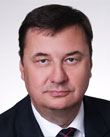

2025-11-07
Projekt wpłynął do Sejmu Druk nr 2033 ↗
u-prezydentaustawaStanowisko Senatu (2026-09-24)Sejm 10/2033
| Proces | Sejm kadencja 10, nr 2033 |
|---|---|
| Wpłynął | 2025-11-07 |
| Ostatnia zmiana źródła | 2026-09-24 |
| Źródło | api.sejm.gov.pl ↗ |
259 zdarzeń
| Klub | Za | Przeciw | Wstrz. | Nieobec. |
|---|---|---|---|---|
| PiS | 0 | 177 | 0 | 11 |
| A. Adamczyk W. Andzel D. Arciszewska-Mielewczyk I. Arent M. Ast P. Babinetz A. Baluch R. Bartosik B. Bartuś R. Bochenek J. Bogucki J. Borowiak K. Bortniczuk B. Borys-Szopa L. Burzyńska M. Błaszczak Z. Chmielowiec A. Chojecki K. Choma D. Chorosińska T. Chrzan A. Cicholska K. Ciecióra J. Cieszyński M. Cieślak K. Czarnecki W. Czarnecki P. Czarnek A. Czartoryski L. Czechak A. Czerwińska K. Czochara W. Dajczak Z. Dolata B. Dorywalski P. Drabek E. Duda J. Dziedziczak A. Dąbrowska-Banaszek M. Filipek-Sobczak R. Fogiel A. Gawron G. Gaża A. Gembicka S. Giżyński P. Gliński M. Golińska R. Gontarz M. Gosek K. Gołojuch M. Grabowski M. Gróbarczyk A. Gut-Mostowy K. Gwiazdowski M. Gwóźdź A. Górska C. Hoc Z. Hoffmann M. Horała P. Hreniak P. Jabłoński M. Jach N. Kaczmarczyk F. Kaczyński J. Kaczyński P. Kaleta S. Kaleta J. Kanthak F. Kapinos M. Kałużny Ł. Kmita M. Koc A. Kosztowniak H. Kowalczyk J. Kowalski M. Kowalski B. Kownacki J. Krajewski W. Krajewski L. Krasulski A. Krupka A. Kryj M. Krystian P. Król K. Kubów M. Kuchciński W. Kulpa M. Kurowska W. Kurowski Z. Kuźmiuk A. Kwiecień E. Leniart J. Lichocka K. Lipiec G. Lorek M. Machałek A. Macierewicz G. Macko E. Malik D. Matecki J. Materna G. Matusiak M. Matuszewski M. Małecki Ł. Mejza A. Milczanowska D. Milewski M. Morawiecki J. Mosiński M. Moskal A. Mrówczyński M. Ociepa B. Olbryś J. Osuch A. Paluch T. Pamuła M. Pawłowska B. Piecha G. Piechowiak A. Pieczarka D. Piontkowski S. Pogoda J. Polaczek P. Polak M. Porzucek G. Puda K. Płażyński Z. Rau M. Romanowski R. Romanowski U. Rusecka P. Rychlik J. Sasin P. Sałek A. Schmidt Ł. Schreiber J. Sellin O. Semeniuk-Patkowska E. Siarka S. Skwarek K. Smoliński K. Sobolewski A. Soin M. Stachowiak-Różecka D. Stefaniuk M. Subocz M. Suski W. Szarama A. Szałabawka K. Szczucki J. Szczurek-Żelazko P. Szrot S. Szwed S. Szynkowski vel Sęk K. Sójka K. Tchórzewski R. Telus R. Terlecki W. Tomaszewski S. Tułajew P. Uruski P. Uściński M. Warchoł R. Warwas J. Warzecha M. Wassermann R. Weber M. Wesoły P. Wicher J. Wieczorek T. Wilk E. Witek A. Wojciechowska van Heukelom A. Wojtyszek M. Woś G. Woźniak T. Woźniak B. Wróblewski M. Wójcik J. Zieliński T. Zieliński Z. Ziobro W. Zubowski I. Zyska S. Łukaszewicz A. Ścigaj A. Śliwka J. Świat | ||||
| KO | 1 | 150 | 1 | 4 |
| P. Adamowicz U. Augustyn S. Bielawska P. Bliźniuk M. Bochenek K. Bojarski P. Borys M. Bosacki M. Chmielewski A. Chybicka J. Cichoń Z. Czernow B. Dolniak A. Domański R. Dowhan M. Filiks J. Frydrych K. Frysztak P. Gabriel K. Gadowski A. Gajewska K. Gajewska E. Gapińska Z. Gawlik E. Gelert A. Gierada R. Giertych W. Giziński M. Golbik S. Gorczyca K. Grabczuk J. Grabiec M. Gromadzka B. Grygorcewicz M. Gzik T. Głogowski P. Głowski K. Habura A. Hanajczyk I. Hartwich M. Hok Ł. Horbatowski K. Jachira R. Jagła M. Janyska M. Jaros P. Jaskulski D. Jazłowiecka D. Jaśkowiec P. Kandyba J. Karnowski I. Karolewska K. Kierzek-Koperska J. Kluzik-Rostkowska Z. Konwiński T. Kostuś U. Koszutska A. Kot P. Kowal I. Kozłowska E. Kołodziej M. Kołodziejczak M. Kołodziejczak M. Koźlakiewicz I. Krawczyk M. Krawczyk R. Kropiwnicki A. Krzemiński H. Krzywonos-Strycharska M. Krząkała W. Król K. Królak P. Lachowicz S. Lamczyk M. Lasek G. Lenartowicz I. Leszczyna B. Lisowska K. Lubnauer A. Marchewka D. Marek P. Masełko K. Matusik-Lipiec J. Meysztowicz K. Mieszkowski C. Mroczek A. Myrcha G. Napieralski D. Niedziela J. Niedźwiedzki M. Niemczyk J. Niezgodzka S. Nitras B. Nowacka T. Nowak M. Okła-Drewnowicz P. Olszewski K. Osos P. Papke K. Pawliczak K. Piekarska L. Pietrzczyk K. Piątkowski K. Plocke E. Polak A. Pomaska M. Popielarz M. Pępek R. Rak M. Roguska M. Rosa J. Rutnicki M. Rząsa K. Sibińska R. Siemaszko T. Siemoniak K. Skowrońska W. Smarduch A. Sobolak M. Sowa K. Stachowicz F. Sterczewski P. Suski A. Szewiński H. Szopiński K. Szumilas T. Szymański A. Szłapka W. Sługocki A. Tajner C. Tomczyk M. Tomczykiewicz M. Tracz K. Truskolaski D. Tusk J. Urbaniak A. Uznańska-Wiśniewska R. Wardzała J. Wałęsa M. Wielichowska A. Witczak M. Witczak P. Witek A. Wojciechowska B. Wołoszański M. Wróbel B. Zawieja W. Zembaczyński U. Zielińska A. Łepkowska-Gołaś D. Łoboda M. Łośko A. Łuczak K. Łuczak A. Łącki Ł. Ściebiorowski | ||||
| PSL-TD | 0 | 30 | 0 | 2 |
| W. Bartoszewski P. Bejda M. Biernacki A. Dziedzic A. Grzyb H. Kiepura D. Klimczak W. Kosiniak-Kamysz S. Krajewski A. Kłopotek R. Lubczyk M. Maliszewski U. Nowogórska M. Orliński K. Paszyk U. Pasławska M. Pyrzyk I. Raś J. Rzepa W. Różyński T. Samborski M. Sawicki C. Siekierski H. Smolarz Z. Sosnowski M. Sroka J. Tomczak S. Tomczyszyn P. Zgorzelski Z. Ziejewski J. Zięba-Gzik B. Żelazowska | ||||
| Polska2050 | 0 | 26 | 0 | 5 |
| A. Buczyńska E. Burkiewicz Ż. Cwalina-Śliwowska A. Gomoła M. Gramatyka P. Górnikiewicz P. Hennig-Kloska B. Hołownia S. Hołownia R. Kasprzyk R. Komarewicz A. Leo A. Luboński J. Mucha M. Nowak B. Okuła B. Oliwiecka Ł. Osmalak R. Petru N. Pietrykowski B. Romowicz E. Schädler M. Skonieczka P. Strach M. Suchoń E. Szymanowska W. Tomczak K. Wnuk P. Zalewski S. Ćwik P. Śliz | ||||
| Lewica | 0 | 21 | 0 | 0 |
| W. Czarzasty J. Czerniak A. Dziemianowicz-Bąk K. Gawkowski D. Gosek-Popiołek K. Kotula P. Kowal A. Kucharska-Dziedzic M. Kulasek Ł. Litewka W. Nowicka D. Olko A. Sikora W. Szczepański A. Szejna T. Tomaszewski T. Trela K. Ueberhan J. Wicha D. Wieczorek A. Żukowska | ||||
| Konfederacja | 14 | 0 | 0 | 2 |
| K. Berkowicz K. Bosak K. Bosak B. Foltyn S. Mentzen K. Mulawa B. Pejo M. Połuboczek G. Płaczek K. Szymański K. Tuduj W. Tumanowicz M. Wawer R. Wilk P. Wipler A. Zapałowski | ||||
| niez. | 0 | 4 | 0 | 1 |
| I. Bodnar M. Jakubiak M. Józefaciuk P. Matysiak T. Zimoch | ||||
| Demokracja | 2 | 2 | 0 | 0 |
| J. Ardanowski P. Kukiz T. Rzymkowski J. Sachajko | ||||
| Razem | 0 | 4 | 0 | 0 |
| M. Konieczny M. Stożek A. Zandberg M. Zawisza | ||||
| Konfederacja_KP | 3 | 0 | 0 | 0 |
| R. Fritz W. Skalik S. Zawiślak | ||||

| Klub | Za | Przeciw | Wstrz. | Nieobec. |
|---|---|---|---|---|
| KO | 150 | 0 | 0 | 6 |
| P. Adamowicz U. Augustyn S. Bielawska P. Bliźniuk M. Bochenek K. Bojarski P. Borys M. Bosacki M. Chmielewski A. Chybicka J. Cichoń Z. Czernow B. Dolniak A. Domański R. Dowhan M. Filiks J. Frydrych K. Frysztak P. Gabriel K. Gadowski A. Gajewska K. Gajewska E. Gapińska Z. Gawlik E. Gelert A. Gierada R. Giertych W. Giziński M. Golbik S. Gorczyca K. Grabczuk J. Grabiec M. Gromadzka B. Grygorcewicz M. Gzik T. Głogowski P. Głowski K. Habura A. Hanajczyk I. Hartwich M. Hok Ł. Horbatowski K. Jachira R. Jagła M. Janyska M. Jaros P. Jaskulski D. Jazłowiecka D. Jaśkowiec P. Kandyba J. Karnowski I. Karolewska K. Kierzek-Koperska J. Kluzik-Rostkowska Z. Konwiński T. Kostuś U. Koszutska A. Kot P. Kowal I. Kozłowska E. Kołodziej M. Kołodziejczak M. Kołodziejczak M. Koźlakiewicz I. Krawczyk M. Krawczyk R. Kropiwnicki A. Krzemiński H. Krzywonos-Strycharska M. Krząkała W. Król K. Królak P. Lachowicz S. Lamczyk M. Lasek G. Lenartowicz I. Leszczyna B. Lisowska K. Lubnauer A. Marchewka D. Marek P. Masełko K. Matusik-Lipiec J. Meysztowicz K. Mieszkowski C. Mroczek A. Myrcha G. Napieralski D. Niedziela J. Niedźwiedzki M. Niemczyk J. Niezgodzka S. Nitras B. Nowacka T. Nowak M. Okła-Drewnowicz P. Olszewski K. Osos P. Papke K. Pawliczak K. Piekarska L. Pietrzczyk K. Piątkowski K. Plocke E. Polak A. Pomaska M. Popielarz M. Pępek R. Rak M. Roguska M. Rosa J. Rutnicki M. Rząsa K. Sibińska R. Siemaszko T. Siemoniak K. Skowrońska W. Smarduch A. Sobolak M. Sowa K. Stachowicz F. Sterczewski P. Suski A. Szewiński H. Szopiński K. Szumilas T. Szymański A. Szłapka W. Sługocki A. Tajner C. Tomczyk M. Tomczykiewicz M. Tracz K. Truskolaski D. Tusk J. Urbaniak A. Uznańska-Wiśniewska R. Wardzała J. Wałęsa M. Wielichowska A. Witczak M. Witczak P. Witek A. Wojciechowska B. Wołoszański M. Wróbel B. Zawieja W. Zembaczyński U. Zielińska A. Łepkowska-Gołaś D. Łoboda M. Łośko A. Łuczak K. Łuczak A. Łącki Ł. Ściebiorowski | ||||
| PiS | 0 | 140 | 0 | 6 |
| A. Adamczyk W. Andzel D. Arciszewska-Mielewczyk I. Arent M. Ast P. Babinetz B. Bartuś R. Bochenek J. Bogucki J. Borowiak K. Bortniczuk B. Borys-Szopa L. Burzyńska M. Błaszczak A. Chojecki K. Choma D. Chorosińska T. Chrzan K. Ciecióra K. Czarnecki W. Czarnecki P. Czarnek A. Czartoryski L. Czechak A. Czerwińska K. Czochara W. Dajczak Z. Dolata B. Dorywalski P. Drabek J. Dziedziczak A. Dąbrowska-Banaszek M. Filipek-Sobczak R. Fogiel A. Gawron G. Gaża A. Gembicka P. Gliński M. Golińska M. Gosek K. Gołojuch M. Grabowski M. Gróbarczyk K. Gwiazdowski A. Górska C. Hoc Z. Hoffmann P. Hreniak M. Jach N. Kaczmarczyk F. Kaczyński J. Kaczyński P. Kaleta S. Kaleta J. Kanthak M. Kałużny A. Kosztowniak H. Kowalczyk M. Kowalski B. Kownacki J. Krajewski L. Krasulski A. Krupka M. Krystian P. Król M. Kuchciński W. Kulpa M. Kurowska W. Kurowski Z. Kuźmiuk E. Leniart J. Lichocka G. Lorek A. Macierewicz E. Malik D. Matecki J. Materna G. Matusiak M. Matuszewski M. Małecki A. Milczanowska D. Milewski J. Mosiński M. Moskal A. Mrówczyński M. Ociepa B. Olbryś J. Osuch A. Paluch T. Pamuła B. Piecha G. Piechowiak A. Pieczarka D. Piontkowski S. Pogoda J. Polaczek P. Polak M. Porzucek K. Płażyński Z. Rau M. Romanowski R. Romanowski U. Rusecka J. Sasin P. Sałek A. Schmidt J. Sellin E. Siarka K. Smoliński K. Sobolewski A. Soin D. Stefaniuk M. Subocz M. Suski W. Szarama A. Szałabawka J. Szczurek-Żelazko P. Szrot S. Szwed K. Sójka K. Tchórzewski R. Telus P. Uruski M. Warchoł R. Warwas J. Warzecha M. Wassermann R. Weber M. Wesoły P. Wicher J. Wieczorek T. Wilk E. Witek A. Wojciechowska van Heukelom A. Wojtyszek M. Woś G. Woźniak T. Woźniak B. Wróblewski M. Wójcik J. Zieliński T. Zieliński Z. Ziobro S. Łukaszewicz A. Śliwka J. Świat | ||||
| RozwojPlus | 34 | 0 | 4 | 3 |
| A. Baluch R. Bartosik Z. Chmielowiec A. Cicholska J. Cieszyński M. Cieślak E. Duda S. Giżyński R. Gontarz A. Gut-Mostowy M. Gwóźdź M. Horała P. Jabłoński M. Jakubiak F. Kapinos Ł. Kmita M. Koc W. Krajewski A. Kryj K. Kubów A. Kwiecień K. Lipiec M. Machałek G. Macko M. Morawiecki M. Pawłowska G. Puda P. Rychlik Ł. Schreiber O. Semeniuk-Patkowska S. Skwarek M. Stachowiak-Różecka K. Szczucki S. Szynkowski vel Sęk R. Terlecki W. Tomaszewski S. Tułajew P. Uściński W. Zubowski I. Zyska A. Ścigaj | ||||
| PSL-TD | 31 | 0 | 0 | 1 |
| W. Bartoszewski P. Bejda M. Biernacki A. Dziedzic A. Grzyb H. Kiepura D. Klimczak W. Kosiniak-Kamysz S. Krajewski A. Kłopotek R. Lubczyk M. Maliszewski U. Nowogórska M. Orliński K. Paszyk U. Pasławska M. Pyrzyk I. Raś J. Rzepa W. Różyński T. Samborski M. Sawicki C. Siekierski H. Smolarz Z. Sosnowski M. Sroka J. Tomczak S. Tomczyszyn P. Zgorzelski Z. Ziejewski J. Zięba-Gzik B. Żelazowska | ||||
| Lewica | 20 | 0 | 0 | 1 |
| B. Borowiec W. Czarzasty J. Czerniak A. Dziemianowicz-Bąk K. Gawkowski D. Gosek-Popiołek K. Kotula P. Kowal A. Kucharska-Dziedzic M. Kulasek W. Nowicka D. Olko A. Sikora W. Szczepański A. Szejna T. Tomaszewski T. Trela K. Ueberhan J. Wicha D. Wieczorek A. Żukowska | ||||
| Konfederacja | 0 | 0 | 16 | 0 |
| K. Berkowicz K. Bosak K. Bosak B. Foltyn S. Mentzen K. Mulawa B. Pejo M. Połuboczek G. Płaczek K. Szymański K. Tuduj W. Tumanowicz M. Wawer R. Wilk P. Wipler A. Zapałowski | ||||
| Centrum | 14 | 0 | 0 | 1 |
| I. Bodnar E. Burkiewicz Ż. Cwalina-Śliwowska P. Hennig-Kloska R. Kasprzyk R. Komarewicz A. Leo B. Okuła B. Oliwiecka R. Petru N. Pietrykowski M. Skonieczka M. Suchoń E. Szymanowska S. Ćwik | ||||
| Polska2050 | 12 | 0 | 0 | 3 |
| A. Buczyńska A. Gomoła M. Gramatyka P. Górnikiewicz B. Hołownia S. Hołownia A. Luboński M. Nowak Ł. Osmalak B. Romowicz E. Schädler P. Strach W. Tomczak K. Wnuk P. Śliz | ||||
| niez. | 4 | 1 | 2 | 0 |
| M. Józefaciuk J. Kowalski P. Matysiak Ł. Mejza J. Mucha P. Zalewski T. Zimoch | ||||
| Demokracja | 0 | 0 | 3 | 1 |
| J. Ardanowski P. Kukiz T. Rzymkowski J. Sachajko | ||||
| Razem | 4 | 0 | 0 | 0 |
| M. Konieczny M. Stożek A. Zandberg M. Zawisza | ||||
| Konfederacja_KP | 0 | 0 | 3 | 0 |
| R. Fritz W. Skalik S. Zawiślak | ||||
Brak zdarzeń dla wybranych filtrów.
Projekt USTAWA z dnia ...... 2025 r. o zmianie ustawy o podatkach i opłatach lokalnych oraz ustawy o dochodach jednostek samorządu terytorialnego Art. 1. W ustawie z dnia 12 stycznia 1991 r. o podatkach i opłatach lokalnych (Dz. U. z 2025 r. poz. 707) wprowadza się następujące zmiany: 1) użyty w art. 1 w pkt 5, w art. 17 w ust. 2 we wprowadzeniu do wyliczenia i w pkt 4 i w ust. 2a oraz w art. 19 w pkt 2 w różnych przypadkach wyraz „miejscowa” zastępuje się użytym w odpowiednich przypadkach wyrazem „turystyczna”; 2) w art. 17: a) ust. 1 otrzymuje brzmienie: “1. Rada gminy może wprowadzić opłatę turystyczną pobieraną od osób fizycznych przebywających w celach turystycznych, wypoczynkowych lub szkoleniowych dłużej niż dobę w miejscowościach, w których opłata została wprowadzona, za każdą rozpoczętą dobę pobytu.”, b) po ust. 2a dodaje się ust. 2b w brzmieniu: „2b. Opłaty turystycznej nie pobiera się od: 1) osób, które ukończyły 70 lat; 2) osób będących członkami rodziny wielodzietnej w rozumieniu art. 4 ust. 1 ustawy z dnia 5 grudnia 2014 r. o Karcie Dużej Rodziny (Dz. U. z 2024 r. poz. 1512); 3) osób zaliczonych do znacznego stopnia niepełnosprawności w rozumieniu przepisów o rehabilitacji zawodowej i społecznej oraz zatrudnianiu osób niepełnosprawnych.”, c) uchyla się ust. 3 i 4, d) ust. 5 otrzymuje brzmienie: “5. Rada gminy ustala miejscowości, w których pobiera się opłatę turystyczną i jej wysokość. Rada gminy może zróżnicować wysokość opłaty turystycznej pobieranej w poszczególnych miejscowościach oraz ze względu na rodzaj obiektu, w którym przebywa osoba zobowiązana do uiszczenia opłaty.”; 3) w art. 19 w pkt 1: a) lit. b otrzymuje brzmienie: „b) stawka opłaty turystycznej nie może przekroczyć 5 zł dziennie”, b) uchyla się lit. c. Art. 2. W ustawie z dnia 1 października 2024 r. o dochodach jednostek samorządu terytorialnego (Dz. U. 2024 poz. 1572) użyty w art. 4 w pkt 3 w lit. c i w art. 5 w pkt 3 w lit. c wyraz „miejscowej” zastępuje się wyrazem „turystycznej”. Art. 3. 1. Uchwała rady gminy, która wprowadziła przed dniem wejścia w życie niniejszej ustawy opłatę miejscową, pozostaje w mocy, nie dłużej jednak niż przez okres roku od dnia wejścia w życie niniejszej ustawy, chyba że rada gminy uchyli uchwałę przed upływem tego okresu. 2. Do opłat miejscowych należnych na podstawie uchwały, o której mowa w ust. 1, stosuje się przepisy ustaw zmienianych w art. 1 i art. 2 w brzmieniu dotychczasowym. 3. W okresie obowiązywania uchwały, o której mowa w ust. 1, w gminie nie może być wprowadzona opłata turystyczna ani rada gminy nie może podnieść stawki opłaty miejscowej. Art. 4. Do dnia 31 grudnia 2027 r. górna granica stawki opłaty turystycznej wynosi 5 zł. Minister właściwy do spraw finansów publicznych ogłosi w obwieszczeniu, o którym mowa w art. 20 ust. 2 ustawy zmienianej w art. 1, po raz pierwszy górną granice stawki opłaty turystycznej na rok podatkowy 2028. Art. 5. Ustawa wchodzi w życie pierwszego dnia miesiąca następującego po upływie 3 miesięcy od dnia ogłoszenia. UZASADNIENIE Obecnie obowiązująca opłata miejscowa została wprowadzona ustawą z dnia 12 stycznia 1991 r. o podatkach i opłatach lokalnych (Dz. U. 1991 Nr 9 poz. 31) i dotyczy osób fizycznych, które czasowo przebywają w celach wypoczynkowych, zdrowotnych lub turystycznych w miejscowościach posiadających odpowiednie walory – klimatyczne, krajobrazowe oraz sprzyjające pobytowi osób w tych celach. Przepisy dotyczące opłaty miejscowej pozostają w głównej mierze niezmienione aż do dziś. Dochód z tytułu opłaty miejscowej stanowi dochód gmin – opłata ma charakter fakultatywny. Obecnie jedynie nieznaczna część spośród 2479 gmin podjęła uchwały o wprowadzeniu opłaty miejscowej. Stosunkowo niewielka liczba gmin, które wprowadziły opłatę miejscową wynika z trudności spełnienia warunków ustawowych przez gminy – warunków klimatycznych, krajobrazowych oraz umożliwiających pobyt osób w celach turystycznych, wypoczynkowych lub szkoleniowych, które szczegółowo określa rozporządzenie Rady Ministrów z dnia 18 grudnia 2007 r. w sprawie warunków, jakie powinna spełniać miejscowość, w której można pobierać opłatę miejscową (Dz. U. poz. 1851). Zgodnie z tym rozporządzeniem, za minimalne warunki klimatyczne uznaje się m.in. zachowanie na terenie strefy oceny jakości powietrza, o której mowa w art. 87 ust. 2 ustawy z dnia 27 kwietnia 2001 r. – Prawo ochrony środowiska, dopuszczalnych poziomów niektórych substancji w powietrzu ze względu na ochronę zdrowia ludzi oraz nieprzekroczenie w miejscowości dopuszczalnych poziomów pól elektromagnetycznych. W praktyce pierwszy z wymogów generuje wiele trudności - miejscowość spełniająca warunki techniczne może zostać formalnie uznana za część strefy, w której normy są przekroczone w innych gminach tej samej strefy — co w efekcie uniemożliwia pobór opłaty miejscowej. Strefy pokrywają się z konkretnymi miastami tylko w przypadku aglomeracji (liczba mieszkańców większa niż 250 tysięcy) i miast o liczbie mieszkańców powyżej 100 tysięcy. W pozostałych przypadkach obszary stref pokrywają się w przeważającej większości z terenami powiatów. Nawet więc, jeżeli w konkretnej miejscowości stężenie niektórych substancji w powietrzu nie przekroczy dopuszczalnych poziomów, lecz miejscowość taka znajdzie się w strefie, w której dopuszczalne poziomy zostały przekroczone, wprowadzenie opłaty miejscowej nie jest możliwe. Oznacza to, że wiele miejscowości o wybitnych walorach krajoznawczo-turystycznych, gdzie turystyka jest podstawą gospodarki nie może spełnić warunków formalnych. Z uwagi na ograniczoną możliwość wpływu samorządów na zmianę przepisów czy na warunki środowiskowe, przepisy regulujące opłatę miejscową wymagają dostosowania do dzisiejszych realiów — tak aby nie tworzyły fałszywego wrażenia, że opłata ta jest związana z czystością powietrza i by nie ograniczały niezasłużenie dochodów gmin. Porównując rozwiązania zagraniczne, warto rozważyć ich adaptację w Polsce — zamiast obecnej konstrukcji opłaty miejscowej, lepiej zastosować model klasycznej opłaty pobytowej (opłaty turystycznej) używanej w wielu krajach. Opłata turystyczna stała się powszechna w Europie i poza nią, obowiązuje zarówno w państwach starających się zwiększyć ruch turystyczny, jak i tych, które chcą go ograniczyć lub profilować. W odniesieniu do Polski – w 2023 r. liczba udzielonych noclegów w turystycznych obiektach noclegowych wyniosła 98,5 mln., a w 2024 r. – 104,1 mln. Rosnący ruch turystyczny generuje dla gmin dodatkowe koszty, takie jak utrzymanie czystości, rewitalizacja przestrzeni i zapewnienie bezpieczeństwa mieszkańcom oraz turystom. Wprowadzenie opłaty, która jest ściśle związana z rzeczywistym ruchem turystycznym stanowić będzie formę rekompensaty dla społeczności lokalnych. Obecnie opłata miejscowa uregulowana jest w art. 17 i art. 19 pkt 1 lit. b i c ustawy z dnia 12 stycznia 1991 r. o podatkach i opłatach lokalnych. Warunkiem jej wprowadzenia jest podjęcie przez radę gminy uchwały. Jak wskazano powyżej, jej pobieranie uzależnione jest od spełnienia kryteriów zawartych w rozporządzeniu Rady Ministrów z dnia 18 grudnia 2007 r. w sprawie warunków, jakie powinna spełniać miejscowość, w której można pobierać opłatę miejscową. Kryteria te to spełnianie warunków klimatycznych, krajobrazowych, umożliwiających pobyt osób w celach turystycznych, wypoczynkowych lub szkoleniowych. Wskazane warunki powinny być spełnione łącznie. Przepisy obowiązujące stosują wyłączenia podmiotowe obowiązku uiszczania opłaty. Jej stawkę ustala rada gminy w uchwale, jednak ustawa określa maksymalną kwotę. Projekt ustawy zakłada rezygnację z korelacji możliwości poboru opłaty miejscowej (turystycznej) z normami klimatycznymi, walorami klimatycznymi, czy warunkami umożliwiającymi pobyt osób w celach turystycznych, wypoczynkowych, czy szkoleniowych. W następstwie opłata ta stanie się po prostu opłatą pobytową poprzez modyfikację art. 17 ust. 1 ustawy. W konsekwencji usunięto także przepis przewidujący delegację ustawową do wydania stosownego rozporządzenia. To zaś determinuje konieczność zmiany jej nazwy poprzez dodanie punktu 5c w art. 1 ustawy. Pozostała konstrukcja, stosowana do tej pory wobec opłaty miejscowej, zostaje zachowana na potrzeby opłaty turystycznej. Pozostanie ona opłatą fakultatywną, stawkę ustalać będzie rada gminy, jednak ustawa określa maksymalną jej stawkę na poziomie 5 zł wg maksymalnej stawki dla roku 2026 i 2027, potem będzie waloryzowana zgodnie z obwieszczeniem Ministra Finansów wydawanym na podstawie art. 20 ust. 2 ustawy. Dochody stanowić będą dochód własny gminy. Projekt jest zgodny z prawem Unii Europejskiej.
z dnia o zmianie ustawy o podatkach i opłatach lokalnych, ustawy o podatku dochodowym od osób fizycznych oraz ustawy o podatku od czynności cywilnoprawnych Art. 1. W ustawie z dnia 12 stycznia 1991 r. o podatkach i opłatach lokalnych (Dz. U. z 2025 r. poz. 707) wprowadza się następujące zmiany: w art. 1a w ust. 1 w pkt 7 kropkę zastępuje się średnikiem i dodaje się pkt 8 w brzmieniu: 1) „8) świadczenie usług zakwaterowania: świadczenie usług hotelarskich w rozumieniu art. 3 ust. 1 pkt 8 ustawy z dnia a) 29 sierpnia 1997 r. o usługach hotelarskich oraz usługach pilotów wycieczek i przewodników turystycznych (Dz. U. z 2023 r. poz. 1944), w obiektach hotelarskich spełniających wymagania określone w art. 35 ust. 1 tej ustawy lub w innych obiektach, o których mowa w art. 35 ust. 2 i 3 tej ustawy, b) udzielanie noclegów w sanatoriach uzdrowiskowych, sanatoriach uzdrowiskowych dla dzieci i w sanatoriach w urządzonych podziemnych wyrobiskach górniczych, o których mowa w art. 6 pkt 2, 3 i 6 ustawy z dnia 28 lipca 2005 r. o lecznictwie uzdrowiskowym, uzdrowiskach i obszarach ochrony uzdrowiskowej oraz o gminach uzdrowiskowych (Dz. U. z 2025 r. poz. 1135).”; 2) art. 17 otrzymuje brzmienie: „Art. 17. 1. Rada gminy może wprowadzić: 1) opłatę miejscową: w miejscowościach posiadających walory krajobrazowe, a) w miejscowościach lub częściach miejscowości, znajdujących się na obszarach, b) którym nadano status obszaru ochrony uzdrowiskowej na zasadach określonych w przepisach ustawy z dnia 28 lipca 2005 r. o lecznictwie uzdrowiskowym, uzdrowiskach i obszarach ochrony uzdrowiskowej oraz o gminach uzdrowiskowych, opłatę uzdrowiskową w miejscowościach lub częściach miejscowości, znajdujących 2) się na obszarach, którym nadano status uzdrowiska na zasadach określonych w Nazwa pliku : V6_34-22.NK Liczba stron : 8 Data : 2026-09-17 X kadencja/druki nr 3099, 2033, 2127 i 2872 2 przepisach ustawy z dnia 28 lipca 2005 r. o lecznictwie uzdrowiskowym, uzdrowiskach i obszarach ochrony uzdrowiskowej oraz o gminach uzdrowiskowych – w których są świadczone usługi zakwaterowania. 2. Stawka opłaty: miejscowej, o której mowa w ust. 1 pkt 1: 1) lit. a, nie może przekroczyć 5,00 zł za noc, a) lit. b, nie może przekroczyć 5,50 zł za noc; b) uzdrowiskowej nie może przekroczyć 6,86 zł za noc. 2) 3. W miejscowości lub części miejscowości, która jednocześnie spełnia warunki, o których mowa w ust. 1 pkt 1 i 2, rada gminy może wprowadzić tylko jedną z opłat określonych w ust. 1. 4. Osobą zobowiązaną do zapłaty opłaty miejscowej albo opłaty uzdrowiskowej jest osoba fizyczna, której przez okres obejmujący co najmniej noc jest świadczona usługa zakwaterowania w miejscowości lub części miejscowości, w której wprowadzono daną opłatę. 5. Przez noc, o której mowa w ust. 2 i 4, rozumie się okres, w którym świadczenie usługi zakwaterowania osobie fizycznej rozpoczyna się w danym dniu kalendarzowym i kończy się następnego dnia. 6. Zwalnia się z opłaty miejscowej i opłaty uzdrowiskowej: 1) pod warunkiem wzajemności – członków personelu przedstawicielstw dyplomatycznych i urzędów konsularnych oraz inne osoby zrównane z nimi na podstawie ustaw, umów lub zwyczajów międzynarodowych, jeżeli nie są obywatelami polskimi i nie mają miejsca pobytu stałego na terytorium Rzeczypospolitej Polskiej; osoby, których niepełnosprawność została potwierdzona orzeczeniem o znacznym 2) stopniu niepełnosprawności, a w przypadku osób niewidomych również osoby, których niepełnosprawność została potwierdzona orzeczeniem o umiarkowanym stopniu niepełnosprawności z symbolem 04-O, zgodnie z przepisami ustawy z dnia 27 sierpnia 1997 r. o rehabilitacji zawodowej i społecznej oraz zatrudnianiu osób niepełnosprawnych (Dz. U. z 2026 r. poz. 884 i 1102); osoby w wieku do 16 lat, których niepełnosprawność została orzeczona zgodnie z 3) przepisami ustawy z dnia 27 sierpnia 1997 r. o rehabilitacji zawodowej i społecznej oraz zatrudnianiu osób niepełnosprawnych; Nazwa pliku : V6_34-22.NK Liczba stron : 8 Data : 2026-09-17 X kadencja/druki nr 3099, 2033, 2127 i 2872 3 jedną osobę towarzyszącą osobie, o której mowa w pkt 2 lub 3; 4) dzieci i młodzież szkolną w zorganizowanych grupach oraz ich opiekunów; 5) osoby, którym przez okres powyżej 29 następujących po sobie nocy są świadczone 6) usługi zakwaterowania w obiektach znajdujących się w miejscowościach lub częściach miejscowości na terenie danej gminy, w których wprowadzono opłatę miejscową albo opłatę uzdrowiskową, zwanych dalej „obiektami” – przez cały okres zakwaterowania. 7. Obowiązek zapłaty opłaty miejscowej i opłaty uzdrowiskowej powstaje w dniu stanowiącym początek okresu, w którym osobie, o której mowa w ust. 4, rozpoczęto świadczenie usługi zakwaterowania w danym obiekcie. 8. Opłatę miejscową i opłatę uzdrowiskową uiszcza się ostatniego dnia okresu, w którym osobie, o której mowa w ust. 4, jest świadczona usługa zakwaterowania w danym obiekcie. 9. Pobór opłaty miejscowej i opłaty uzdrowiskowej następuje przez płatnika, którym jest podmiot świadczący usługi zakwaterowania. 10. Płatnik może uzależnić rozpoczęcie świadczenia usługi zakwaterowania od dokonania, najpóźniej w dniu rozpoczęcia świadczenia usługi zakwaterowania, wpłaty na poczet należnej opłaty miejscowej albo opłaty uzdrowiskowej w wysokości należnej opłaty miejscowej albo opłaty uzdrowiskowej od deklarowanej liczby nocy, przez które będzie świadczona usługa zakwaterowania w danym obiekcie osobie, o której mowa w ust. 4. 11. W przypadku gdy po rozpoczęciu świadczenia usługi zakwaterowania w danym obiekcie deklarowana liczba nocy, przez które będzie świadczona usługa zakwaterowania, przekroczy liczbę nocy, za które dokonano wpłaty na poczet należnej opłaty miejscowej albo opłaty uzdrowiskowej, przepis ust. 10 stosuje się odpowiednio. 12. Jeżeli dokonana wpłata na poczet należnej opłaty miejscowej albo opłaty uzdrowiskowej jest wyższa od należnej opłaty miejscowej albo opłaty uzdrowiskowej, w dniu określonym w ust. 8 płatnik zwraca różnicę między dokonaną wpłatą na poczet należnej opłaty miejscowej albo opłaty uzdrowiskowej a należną opłatą miejscową albo opłatą uzdrowiskową osobie, która dokonała tej wpłaty. 13. Płatnik wydaje potwierdzenie dokonania wpłaty na poczet należnej opłaty miejscowej albo opłaty uzdrowiskowej lub uiszczenia opłaty miejscowej albo opłaty uzdrowiskowej. Nazwa pliku : V6_34-22.NK Liczba stron : 8 Data : 2026-09-17 X kadencja/druki nr 3099, 2033, 2127 i 2872 4 14. Płatnikowi przysługuje wynagrodzenie z tytułu terminowego wpłacania prawidłowo pobranej opłaty miejscowej albo opłaty uzdrowiskowej w wysokości 10% pobranych tych opłat, chyba że rada gminy określiła wyższe wynagrodzenie. 15. Płatnik jest obowiązany prowadzić, odrębnie dla każdego obiektu, w którym są świadczone usługi zakwaterowania, rejestr opłaty miejscowej albo rejestr opłaty uzdrowiskowej, zawierający następujące dane: imię i nazwisko oraz adres zamieszkania osoby, której jest świadczona usługa 1) zakwaterowania, a w przypadku zorganizowanych grup dzieci lub młodzieży szkolnej – liczbę dzieci i młodzieży w tej grupie oraz nazwę i adres organizatora tej grupy; stawkę opłaty miejscowej albo opłaty uzdrowiskowej albo tytuł niepobrania tej 2) opłaty; liczbę nocy, za które została pobrana opłata miejscowa albo opłata uzdrowiskowa; 3) wysokość pobranej opłaty miejscowej albo opłaty uzdrowiskowej. 4) 16. Płatnik, w terminie do 15. dnia miesiąca następującego po miesiącu, w którym pobrano opłatę miejscową albo opłatę uzdrowiskową: składa właściwemu organowi podatkowemu informację o wysokości opłaty 1) miejscowej albo opłaty uzdrowiskowej pobranej w danym miesiącu oraz wpłaca pobraną opłatę miejscową albo opłatę uzdrowiskową na rachunek 2) właściwego organu podatkowego, pomniejszoną o przysługujące wynagrodzenie z tytułu terminowego wpłacania prawidłowo pobranej opłaty miejscowej albo opłaty uzdrowiskowej. 17. Informacja, o której mowa w ust. 16 pkt 1, zawiera następujące dane: 1) okres, za który jest składana informacja; nazwę i adres siedziby organu podatkowego, do którego jest składana informacja; 2) 3) cel składania informacji: a) złożenie informacji, b) korekta informacji; 4) dane płatnika: a) imię i nazwisko albo nazwę (firmę), b) identyfikator podatkowy, imię i nazwisko, numer telefonu lub adres poczty elektronicznej osoby c) wskazanej do kontaktu; Nazwa pliku : V6_34-22.NK Liczba stron : 8 Data : 2026-09-17 X kadencja/druki nr 3099, 2033, 2127 i 2872 5 adres i nazwę obiektu, w którym są świadczone usługi zakwaterowania; 5) wysokość opłaty miejscowej albo opłaty uzdrowiskowej pobranej w danym 6) miesiącu; wysokość wynagrodzenia z tytułu terminowego wpłacenia prawidłowo pobranej 7) opłaty miejscowej albo opłaty uzdrowiskowej; podpis płatnika lub osoby wyznaczonej do obliczenia i pobrania opłaty miejscowej 8) albo opłaty uzdrowiskowej, lub podpis pełnomocnika płatnika; pouczenie, że informacja stanowi podstawę do wystawienia tytułu wykonawczego 9) zgodnie z przepisami ustawy z dnia 17 czerwca 1966 r. o postępowaniu egzekucyjnym w administracji (Dz. U. z 2026 r. poz. 268, 516, 739 i 1003). 18. Informację, o której mowa w ust. 16 pkt 1, składa się za pomocą środków komunikacji elektronicznej i opatruje się podpisem elektronicznym. 19. Rada gminy, w drodze uchwały: określa miejscowości lub ich części, w których jest wprowadzona opłata miejscowa 1) albo opłata uzdrowiskowa; określa wysokość stawek opłaty miejscowej i opłaty uzdrowiskowej; 2) może różnicować wysokość stawek opłaty miejscowej i opłaty uzdrowiskowej oraz 3) wprowadzać zwolnienia z tych opłat ze względu na: lokalizację lub rodzaj obiektu, w którym są świadczone usługi zakwaterowania, a) część roku, w której są pobierane te opłaty, b) długość pobytu osoby zobowiązanej do zapłaty tych opłat, c) miejsce zamieszkania osoby zobowiązanej do zapłaty tych opłat w gminie, w d) której je ustanowiono, wiek osoby zobowiązanej do zapłaty tych opłat, e) posiadanie przez osobę zobowiązaną do zapłaty tych opłat Karty Dużej f) Rodziny, o której mowa w ustawie z dnia 5 grudnia 2014 r. o Karcie Dużej Rodziny (Dz. U. z 2024 r. poz. 1512), stopień niepełnosprawności osoby niepełnosprawnej zobowiązanej do zapłaty g) tych opłat; może określić wyższe, niż określone w ust. 14, wynagrodzenie dla płatników z tytułu 4) terminowego wpłacania prawidłowo pobranej opłaty miejscowej i opłaty uzdrowiskowej; Nazwa pliku : V6_34-22.NK Liczba stron : 8 Data : 2026-09-17 X kadencja/druki nr 3099, 2033, 2127 i 2872 6 określa sposób przesyłania informacji, o której mowa w ust. 16 pkt 1, za pomocą 5) środków komunikacji elektronicznej; określa rodzaje podpisu elektronicznego, którym powinna być opatrzona informacja, 6) o której mowa w ust. 16 pkt 1. 20. Minister właściwy do spraw finansów publicznych udostępnia, w formie dokumentu elektronicznego, wzór informacji, o której mowa w ust. 16 pkt 1. 21. Rada Ministrów określi, w drodze rozporządzenia, minimalne walory krajobrazowe, jakie powinna spełniać miejscowość, w której można pobierać opłatę miejscową, uwzględniając zróżnicowanie warunków regionalnych i lokalnych.”; 3) w art. 19: a) w pkt 1: wprowadzenie do wyliczenia otrzymuje brzmienie: – „określa zasady ustalania i poboru oraz terminy płatności i wysokość stawek opłaty targowej, opłaty od posiadania psów oraz opłaty reklamowej, z tym że:”, – uchyla się lit. b–d, b) pkt 2 otrzymuje brzmienie: „2) może zarządzić pobór opłat, o których mowa w pkt 1, w drodze inkasa oraz określić inkasentów i wysokość wynagrodzenia za inkaso;”, w pkt 3 wyrazy „opłat lokalnych” zastępuje wyrazami „opłat, o których mowa w c) pkt 1”; w art. 20 w ust. 1 po wyrazach „art. 10 ust. 1” dodaje się wyrazy „ , art. 17 ust. 2”; 4) w art. 20a w ust. 1 wyrazy „w art. 5 ust. 1, art. 10 ust. 1 oraz art. 19 pkt 1 lit. a–d” zastępuje 5) się wyrazami „w art. 5 ust. 1, art. 10 ust. 1, art. 17 ust. 2 oraz art. 19 pkt 1 lit. a”. Art. 2. W ustawie z dnia 26 lipca 1991 r. o podatku dochodowym od osób fizycznych (Dz. U. z 2026 r. poz. 592, 779, 846, 1079, 1098 i 1123) w art. 14 w ust. 2 w pkt 10 lit. a otrzymuje brzmienie: „a) terminowego wpłacania podatków i opłat pobranych na rzecz budżetu państwa i budżetów jednostek samorządu terytorialnego,”. Art. 3. W ustawie z dnia 9 września 2000 r. o podatku od czynności cywilnoprawnych (Dz. U. z 2026 r. poz. 191) w art. 9 w pkt 6 wyrazy „1000 zł” zastępuje się wyrazami „3000 zł”. Nazwa pliku : V6_34-22.NK Liczba stron : 8 Data : 2026-09-17 X kadencja/druki nr 3099, 2033, 2127 i 2872 7 Art. 4. Do postępowań podatkowych w sprawie opłaty miejscowej oraz do postępowań podatkowych w sprawie opłaty uzdrowiskowej, wszczętych i niezakończonych przed dniem wejścia w życie niniejszej ustawy, stosuje się przepisy dotychczasowe. Art. 5. Do pobytu osoby fizycznej przebywającej dłużej niż dobę w celach zdrowotnych, turystycznych, wypoczynkowych lub szkoleniowych w miejscowości, w której przed dniem 1 stycznia 2027 r. wprowadzono opłatę miejscową lub opłatę uzdrowiskową, rozpoczętego i niezakończonego przed dniem 1 stycznia 2027 r., do części pobytu przypadającej: przed dniem 1 stycznia 2027 r., stosuje się przepisy dotychczasowe, a pobytu tej osoby do 1) dnia 31 grudnia 2026 r. nie wlicza się do okresu, o którym mowa w art. 17 ust. 6 pkt 6 ustawy zmienianej w art. 1, w brzmieniu nadanym niniejszą ustawą; od dnia 1 stycznia 2027 r., stosuje się przepisy ustawy zmienianej w art. 1, w brzmieniu 2) nadanym niniejszą ustawą, z tym że obowiązek zapłaty opłaty miejscowej lub opłaty uzdrowiskowej z tytułu świadczenia usługi zakwaterowania tej osobie powstaje w dniu 1 stycznia 2027 r. Art. 6. 1. W okresie od dnia wejścia w życie niniejszej ustawy do dnia 31 grudnia 2029 r. informacja, o której mowa w art. 17 ust. 16 pkt 1 ustawy zmienianej w art. 1, może być składana w postaci papierowej. 2. Minister właściwy do spraw finansów publicznych zamieszcza w Biuletynie Informacji Publicznej na stronie podmiotowej urzędu obsługującego tego ministra wzór informacji, o której mowa w art. 17 ust. 16 pkt 1 ustawy zmienianej w art. 1, składanej w postaci papierowej. Art. 7. Dotychczasowe przepisy wykonawcze wydane na podstawie art. 17 ust. 3 i 4 ustawy zmienianej w art. 1, w brzmieniu dotychczasowym, tracą moc. Art. 8. Dotychczasowe akty prawa miejscowego wydane na podstawie art. 17 ust. 1, 1a i 5 oraz art. 19 pkt 1 lit. b–d, pkt 2 i 3 ustawy zmienianej w art. 1, w brzmieniu dotychczasowym, których przedmiotem jest opłata miejscowa lub opłata uzdrowiskowa, tracą moc. Art. 9. Dotychczasowe akty prawa miejscowego wydane na podstawie art. 19 pkt 2 i 3 ustawy zmienianej w art. 1, w brzmieniu dotychczasowym, których przedmiotem nie jest opłata miejscowa lub opłata uzdrowiskowa, tracą moc z dniem wejścia w życie aktów prawa miejscowego wydanych na podstawie art. 19 pkt 2 i 3 ustawy zmienianej w art. 1, w brzmieniu nadanym niniejszą ustawą, jednak niepóźniej niż z dniem 1 stycznia 2028 r. Nazwa pliku : V6_34-22.NK Liczba stron : 8 Data : 2026-09-17 X kadencja/druki nr 3099, 2033, 2127 i 2872 8 Art. 10. Do czynności cywilnoprawnych dokonanych przed dniem wejścia w życie niniejszego przepisu stosuje się przepisy ustawy zmienianej w art. 3, w brzmieniu dotychczasowym. Art. 11. Ustawa wchodzi w życie z dniem 1 stycznia 2027 r., z wyjątkiem art. 3 i art. 10, które wchodzą w życie po upływie 14 dni od dnia ogłoszenia.
SEJM RZECZYPOSPOLITEJ POLSKIEJ X kadencja Druk nr 3118 S P R A W O Z D A N I E KOMISJI FINANSÓW PUBLICZNYCH ORAZ KOMISJI SAMORZĄDU TERYTORIALNEGO I POLITYKI REGIONALNEJ o poselskich projektach ustaw o zmianie ustawy o podatkach i opłatach lokalnych oraz ustawy o dochodach jednostek samorządu terytorialnego (druki nr 2033 i 2127), o poselskim projekcie ustawy o zmianie ustawy o podatkach i opłatach lokalnych oraz o zmianie niektórych innych ustaw (druk nr 2872) oraz o rządowym projekcie ustawy o zmianie ustawy o podatkach i opłatach lokalnych, ustawy o podatku dochodowym od osób fizycznych oraz ustawy o podatku od czynności cywilnoprawnych (druk nr 3099) Sejm na 51. posiedzeniu w dniu 13 lutego 2026 r., zgodnie z art. 39 ust. 2 regulaminu Sejmu, skierował projekty ustaw z druków nr 2033 i 2127, na 64. posiedzeniu w dniu 2 września 2026 r. skierował projekt ustawy z druku nr 2872 oraz na 65. posiedzeniu w dniu 16 września 2026 r. skierował projekt ustawy z druku nr 3099 do Komisji Finansów Publicznych oraz Komisji Samorządu Terytorialnego i Polityki Regionalnej w celu rozpatrzenia. Komisje: Finansów Publicznych oraz Samorządu Terytorialnego i Polityki Regionalnej po rozpatrzeniu tych projektów ustaw na posiedzeniu dniu 16 września 2026 r. wnoszą: Wysoki Sejm uchwalić raczy załączony projekt ustawy. Komisje, zgodnie z art. 43 ust. 3 regulaminu Sejmu, przedstawiają na żądanie wnioskodawców, następujące wnioski mniejszości: 1) w art. 1: a) w pkt 2, w art. 17 w ust. 2 w pkt 1: – w lit. a wyrazy „5,00 zł” zastąpić wyrazami „równowartości 50 % minimalnej stawki godzinowej ustalonej na podstawie przepisów ustawy z dnia 10 października 2002 r. o minimalnym wynagrodzeniu za pracę (Dz. U. z 2024 r. poz. 1773), zaokrąglonej w górę do pełnych groszy,”, – w lit. b wyrazy „5,50 zł” zastąpić wyrazami „równowartości 55% minimalnej stawki godzinowej ustalonej na podstawie przepisów ustawy z dnia 10 października 2002 r. o minimalnym wynagrodzeniu za pracę, zaokrąglonej w górę do pełnych groszy,”, b) pkt 4 nadać brzmienie: „4) w art. 20 w ust. 1 po wyrazach „art. 10 ust. 1” dodaje się wyrazy „ , art. 17 ust. 2 pkt 2”;”; – poseł D. Gosek-Popiołek Uwaga: przyjęcie wniosku mniejszości nr 1 spowoduje bezprzedmiotowość wniosku mniejszości nr 2. 2) w art. 1 w pkt 2, w art. 17 w ust. 2 pkt 1 nadać brzmienie: „1) miejscowej, o której mowa w ust. 1 pkt 1, nie może przekroczyć równowartości 35 % minimalnej stawki godzinowej ustalonej na podstawie przepisów ustawy z dnia 10 października 2002 r. o minimalnym wynagrodzeniu za pracę (Dz. U. z 2024 r. poz. 1773);”; – poseł M. Pyrzyk 3) w art. 1 w pkt 2, w art. 17 po ust. 7 dodać ust. 7a w brzmieniu: „7a. Opłata miejscowa podlega dystrybucji w następujących proporcjach: 1) 90 % gmina, w której dokonano poboru; 2) 10 % Polska Organizacja Turystyczna.”. – poseł M. Pyrzyk Warszawa, dnia 16 września 2026 r. Przewodniczący Komisji Samorządu Terytorialnego i Polityki Regionalnej (-) Michał Krawczyk Przewodniczący Komisji Finansów Publicznych (-) Janusz Cichoń Sprawozdawca (-) Marek Sowa Tłoczono z polecenia Marszałka Sejmu Rzeczypospolitej Polskiej Nazwa pliku : V6_34-22.NK Liczba stron : 8 Data : 2026-09-17 X kadencja/druki nr 3099, 2033, 2127 i 2872 1 Projekt U S T AWA z dnia o zmianie ustawy o podatkach i opłatach lokalnych, ustawy o podatku dochodowym od osób fizycznych oraz ustawy o podatku od czynności cywilnoprawnych Art. 1. W ustawie z dnia 12 stycznia 1991 r. o podatkach i opłatach lokalnych (Dz. U. z 2025 r. poz. 707) wprowadza się następujące zmiany: w art. 1a w ust. 1 w pkt 7 kropkę zastępuje się średnikiem i dodaje się pkt 8 w brzmieniu: 1) „8) świadczenie usług zakwaterowania: świadczenie usług hotelarskich w rozumieniu art. 3 ust. 1 pkt 8 ustawy z dnia a) 29 sierpnia 1997 r. o usługach hotelarskich oraz usługach pilotów wycieczek i przewodników turystycznych (Dz. U. z 2023 r. poz. 1944), w obiektach hotelarskich spełniających wymagania określone w art. 35 ust. 1 tej ustawy lub w innych obiektach, o których mowa w art. 35 ust. 2 i 3 tej ustawy, b) udzielanie noclegów w sanatoriach uzdrowiskowych, sanatoriach uzdrowiskowych dla dzieci i w sanatoriach w urządzonych podziemnych wyrobiskach górniczych, o których mowa w art. 6 pkt 2, 3 i 6 ustawy z dnia 28 lipca 2005 r. o lecznictwie uzdrowiskowym, uzdrowiskach i obszarach ochrony uzdrowiskowej oraz o gminach uzdrowiskowych (Dz. U. z 2025 r. poz. 1135).”; 2) art. 17 otrzymuje brzmienie: „Art. 17. 1. Rada gminy może wprowadzić: 1) opłatę miejscową: w miejscowościach posiadających walory krajobrazowe, a) w miejscowościach lub częściach miejscowości, znajdujących się na obszarach, b) którym nadano status obszaru ochrony uzdrowiskowej na zasadach określonych w przepisach ustawy z dnia 28 lipca 2005 r. o lecznictwie uzdrowiskowym, uzdrowiskach i obszarach ochrony uzdrowiskowej oraz o gminach uzdrowiskowych, opłatę uzdrowiskową w miejscowościach lub częściach miejscowości, znajdujących 2) się na obszarach, którym nadano status uzdrowiska na zasadach określonych w Nazwa pliku : V6_34-22.NK Liczba stron : 8 Data : 2026-09-17 X kadencja/druki nr 3099, 2033, 2127 i 2872 2 przepisach ustawy z dnia 28 lipca 2005 r. o lecznictwie uzdrowiskowym, uzdrowiskach i obszarach ochrony uzdrowiskowej oraz o gminach uzdrowiskowych – w których są świadczone usługi zakwaterowania. 2. Stawka opłaty: miejscowej, o której mowa w ust. 1 pkt 1: 1) lit. a, nie może przekroczyć 5,00 zł za noc, a) lit. b, nie może przekroczyć 5,50 zł za noc; b) uzdrowiskowej nie może przekroczyć 6,86 zł za noc. 2) 3. W miejscowości lub części miejscowości, która jednocześnie spełnia warunki, o których mowa w ust. 1 pkt 1 i 2, rada gminy może wprowadzić tylko jedną z opłat określonych w ust. 1. 4. Osobą zobowiązaną do zapłaty opłaty miejscowej albo opłaty uzdrowiskowej jest osoba fizyczna, której przez okres obejmujący co najmniej noc jest świadczona usługa zakwaterowania w miejscowości lub części miejscowości, w której wprowadzono daną opłatę. 5. Przez noc, o której mowa w ust. 2 i 4, rozumie się okres, w którym świadczenie usługi zakwaterowania osobie fizycznej rozpoczyna się w danym dniu kalendarzowym i kończy się następnego dnia. 6. Zwalnia się z opłaty miejscowej i opłaty uzdrowiskowej: 1) pod warunkiem wzajemności – członków personelu przedstawicielstw dyplomatycznych i urzędów konsularnych oraz inne osoby zrównane z nimi na podstawie ustaw, umów lub zwyczajów międzynarodowych, jeżeli nie są obywatelami polskimi i nie mają miejsca pobytu stałego na terytorium Rzeczypospolitej Polskiej; osoby, których niepełnosprawność została potwierdzona orzeczeniem o znacznym 2) stopniu niepełnosprawności, a w przypadku osób niewidomych również osoby, których niepełnosprawność została potwierdzona orzeczeniem o umiarkowanym stopniu niepełnosprawności z symbolem 04-O, zgodnie z przepisami ustawy z dnia 27 sierpnia 1997 r. o rehabilitacji zawodowej i społecznej oraz zatrudnianiu osób niepełnosprawnych (Dz. U. z 2026 r. poz. 884 i 1102); osoby w wieku do 16 lat, których niepełnosprawność została orzeczona zgodnie z 3) przepisami ustawy z dnia 27 sierpnia 1997 r. o rehabilitacji zawodowej i społecznej oraz zatrudnianiu osób niepełnosprawnych; Nazwa pliku : V6_34-22.NK Liczba stron : 8 Data : 2026-09-17 X kadencja/druki nr 3099, 2033, 2127 i 2872 3 jedną osobę towarzyszącą osobie, o której mowa w pkt 2 lub 3; 4) dzieci i młodzież szkolną w zorganizowanych grupach oraz ich opiekunów; 5) osoby, którym przez okres powyżej 29 następujących po sobie nocy są świadczone 6) usługi zakwaterowania w obiektach znajdujących się w miejscowościach lub częściach miejscowości na terenie danej gminy, w których wprowadzono opłatę miejscową albo opłatę uzdrowiskową, zwanych dalej „obiektami” – przez cały okres zakwaterowania. 7. Obowiązek zapłaty opłaty miejscowej i opłaty uzdrowiskowej powstaje w dniu stanowiącym początek okresu, w którym osobie, o której mowa w ust. 4, rozpoczęto świadczenie usługi zakwaterowania w danym obiekcie. 8. Opłatę miejscową i opłatę uzdrowiskową uiszcza się ostatniego dnia okresu, w którym osobie, o której mowa w ust. 4, jest świadczona usługa zakwaterowania w danym obiekcie. 9. Pobór opłaty miejscowej i opłaty uzdrowiskowej następuje przez płatnika, którym jest podmiot świadczący usługi zakwaterowania. 10. Płatnik może uzależnić rozpoczęcie świadczenia usługi zakwaterowania od dokonania, najpóźniej w dniu rozpoczęcia świadczenia usługi zakwaterowania, wpłaty na poczet należnej opłaty miejscowej albo opłaty uzdrowiskowej w wysokości należnej opłaty miejscowej albo opłaty uzdrowiskowej od deklarowanej liczby nocy, przez które będzie świadczona usługa zakwaterowania w danym obiekcie osobie, o której mowa w ust. 4. 11. W przypadku gdy po rozpoczęciu świadczenia usługi zakwaterowania w danym obiekcie deklarowana liczba nocy, przez które będzie świadczona usługa zakwaterowania, przekroczy liczbę nocy, za które dokonano wpłaty na poczet należnej opłaty miejscowej albo opłaty uzdrowiskowej, przepis ust. 10 stosuje się odpowiednio. 12. Jeżeli dokonana wpłata na poczet należnej opłaty miejscowej albo opłaty uzdrowiskowej jest wyższa od należnej opłaty miejscowej albo opłaty uzdrowiskowej, w dniu określonym w ust. 8 płatnik zwraca różnicę między dokonaną wpłatą na poczet należnej opłaty miejscowej albo opłaty uzdrowiskowej a należną opłatą miejscową albo opłatą uzdrowiskową osobie, która dokonała tej wpłaty. 13. Płatnik wydaje potwierdzenie dokonania wpłaty na poczet należnej opłaty miejscowej albo opłaty uzdrowiskowej lub uiszczenia opłaty miejscowej albo opłaty uzdrowiskowej. Nazwa pliku : V6_34-22.NK Liczba stron : 8 Data : 2026-09-17 X kadencja/druki nr 3099, 2033, 2127 i 2872 4 14. Płatnikowi przysługuje wynagrodzenie z tytułu terminowego wpłacania prawidłowo pobranej opłaty miejscowej albo opłaty uzdrowiskowej w wysokości 10% pobranych tych opłat, chyba że rada gminy określiła wyższe wynagrodzenie. 15. Płatnik jest obowiązany prowadzić, odrębnie dla każdego obiektu, w którym są świadczone usługi zakwaterowania, rejestr opłaty miejscowej albo rejestr opłaty uzdrowiskowej, zawierający następujące dane: imię i nazwisko oraz adres zamieszkania osoby, której jest świadczona usługa 1) zakwaterowania, a w przypadku zorganizowanych grup dzieci lub młodzieży szkolnej – liczbę dzieci i młodzieży w tej grupie oraz nazwę i adres organizatora tej grupy; stawkę opłaty miejscowej albo opłaty uzdrowiskowej albo tytuł niepobrania tej 2) opłaty; liczbę nocy, za które została pobrana opłata miejscowa albo opłata uzdrowiskowa; 3) wysokość pobranej opłaty miejscowej albo opłaty uzdrowiskowej. 4) 16. Płatnik, w terminie do 15. dnia miesiąca następującego po miesiącu, w którym pobrano opłatę miejscową albo opłatę uzdrowiskową: składa właściwemu organowi podatkowemu informację o wysokości opłaty 1) miejscowej albo opłaty uzdrowiskowej pobranej w danym miesiącu oraz wpłaca pobraną opłatę miejscową albo opłatę uzdrowiskową na rachunek 2) właściwego organu podatkowego, pomniejszoną o przysługujące wynagrodzenie z tytułu terminowego wpłacania prawidłowo pobranej opłaty miejscowej albo opłaty uzdrowiskowej. 17. Informacja, o której mowa w ust. 16 pkt 1, zawiera następujące dane: 1) okres, za który jest składana informacja; nazwę i adres siedziby organu podatkowego, do którego jest składana informacja; 2) 3) cel składania informacji: a) złożenie informacji, b) korekta informacji; 4) dane płatnika: a) imię i nazwisko albo nazwę (firmę), b) identyfikator podatkowy, imię i nazwisko, numer telefonu lub adres poczty elektronicznej osoby c) wskazanej do kontaktu; Nazwa pliku : V6_34-22.NK Liczba stron : 8 Data : 2026-09-17 X kadencja/druki nr 3099, 2033, 2127 i 2872 5 adres i nazwę obiektu, w którym są świadczone usługi zakwaterowania; 5) wysokość opłaty miejscowej albo opłaty uzdrowiskowej pobranej w danym 6) miesiącu; wysokość wynagrodzenia z tytułu terminowego wpłacenia prawidłowo pobranej 7) opłaty miejscowej albo opłaty uzdrowiskowej; podpis płatnika lub osoby wyznaczonej do obliczenia i pobrania opłaty miejscowej 8) albo opłaty uzdrowiskowej, lub podpis pełnomocnika płatnika; pouczenie, że informacja stanowi podstawę do wystawienia tytułu wykonawczego 9) zgodnie z przepisami ustawy z dnia 17 czerwca 1966 r. o postępowaniu egzekucyjnym w administracji (Dz. U. z 2026 r. poz. 268, 516, 739 i 1003). 18. Informację, o której mowa w ust. 16 pkt 1, składa się za pomocą środków komunikacji elektronicznej i opatruje się podpisem elektronicznym. 19. Rada gminy, w drodze uchwały: określa miejscowości lub ich części, w których jest wprowadzona opłata miejscowa 1) albo opłata uzdrowiskowa; określa wysokość stawek opłaty miejscowej i opłaty uzdrowiskowej; 2) może różnicować wysokość stawek opłaty miejscowej i opłaty uzdrowiskowej oraz 3) wprowadzać zwolnienia z tych opłat ze względu na: lokalizację lub rodzaj obiektu, w którym są świadczone usługi zakwaterowania, a) część roku, w której są pobierane te opłaty, b) długość pobytu osoby zobowiązanej do zapłaty tych opłat, c) miejsce zamieszkania osoby zobowiązanej do zapłaty tych opłat w gminie, w d) której je ustanowiono, wiek osoby zobowiązanej do zapłaty tych opłat, e) posiadanie przez osobę zobowiązaną do zapłaty tych opłat Karty Dużej f) Rodziny, o której mowa w ustawie z dnia 5 grudnia 2014 r. o Karcie Dużej Rodziny (Dz. U. z 2024 r. poz. 1512), stopień niepełnosprawności osoby niepełnosprawnej zobowiązanej do zapłaty g) tych opłat; może określić wyższe, niż określone w ust. 14, wynagrodzenie dla płatników z tytułu 4) terminowego wpłacania prawidłowo pobranej opłaty miejscowej i opłaty uzdrowiskowej; Nazwa pliku : V6_34-22.NK Liczba stron : 8 Data : 2026-09-17 X kadencja/druki nr 3099, 2033, 2127 i 2872 6 określa sposób przesyłania informacji, o której mowa w ust. 16 pkt 1, za pomocą 5) środków komunikacji elektronicznej; określa rodzaje podpisu elektronicznego, którym powinna być opatrzona informacja, 6) o której mowa w ust. 16 pkt 1. 20. Minister właściwy do spraw finansów publicznych udostępnia, w formie dokumentu elektronicznego, wzór informacji, o której mowa w ust. 16 pkt 1. 21. Rada Ministrów określi, w drodze rozporządzenia, minimalne walory krajobrazowe, jakie powinna spełniać miejscowość, w której można pobierać opłatę miejscową, uwzględniając zróżnicowanie warunków regionalnych i lokalnych.”; 3) w art. 19: a) w pkt 1: wprowadzenie do wyliczenia otrzymuje brzmienie: – „określa zasady ustalania i poboru oraz terminy płatności i wysokość stawek opłaty targowej, opłaty od posiadania psów oraz opłaty reklamowej, z tym że:”, – uchyla się lit. b–d, b) pkt 2 otrzymuje brzmienie: „2) może zarządzić pobór opłat, o których mowa w pkt 1, w drodze inkasa oraz określić inkasentów i wysokość wynagrodzenia za inkaso;”, w pkt 3 wyrazy „opłat lokalnych” zastępuje wyrazami „opłat, o których mowa w c) pkt 1”; w art. 20 w ust. 1 po wyrazach „art. 10 ust. 1” dodaje się wyrazy „ , art. 17 ust. 2”; 4) w art. 20a w ust. 1 wyrazy „w art. 5 ust. 1, art. 10 ust. 1 oraz art. 19 pkt 1 lit. a–d” zastępuje 5) się wyrazami „w art. 5 ust. 1, art. 10 ust. 1, art. 17 ust. 2 oraz art. 19 pkt 1 lit. a”. Art. 2. W ustawie z dnia 26 lipca 1991 r. o podatku dochodowym od osób fizycznych (Dz. U. z 2026 r. poz. 592, 779, 846, 1079, 1098 i 1123) w art. 14 w ust. 2 w pkt 10 lit. a otrzymuje brzmienie: „a) terminowego wpłacania podatków i opłat pobranych na rzecz budżetu państwa i budżetów jednostek samorządu terytorialnego,”. Art. 3. W ustawie z dnia 9 września 2000 r. o podatku od czynności cywilnoprawnych (Dz. U. z 2026 r. poz. 191) w art. 9 w pkt 6 wyrazy „1000 zł” zastępuje się wyrazami „3000 zł”. Nazwa pliku : V6_34-22.NK Liczba stron : 8 Data : 2026-09-17 X kadencja/druki nr 3099, 2033, 2127 i 2872 7 Art. 4. Do postępowań podatkowych w sprawie opłaty miejscowej oraz do postępowań podatkowych w sprawie opłaty uzdrowiskowej, wszczętych i niezakończonych przed dniem wejścia w życie niniejszej ustawy, stosuje się przepisy dotychczasowe. Art. 5. Do pobytu osoby fizycznej przebywającej dłużej niż dobę w celach zdrowotnych, turystycznych, wypoczynkowych lub szkoleniowych w miejscowości, w której przed dniem 1 stycznia 2027 r. wprowadzono opłatę miejscową lub opłatę uzdrowiskową, rozpoczętego i niezakończonego przed dniem 1 stycznia 2027 r., do części pobytu przypadającej: przed dniem 1 stycznia 2027 r., stosuje się przepisy dotychczasowe, a pobytu tej osoby do 1) dnia 31 grudnia 2026 r. nie wlicza się do okresu, o którym mowa w art. 17 ust. 6 pkt 6 ustawy zmienianej w art. 1, w brzmieniu nadanym niniejszą ustawą; od dnia 1 stycznia 2027 r., stosuje się przepisy ustawy zmienianej w art. 1, w brzmieniu 2) nadanym niniejszą ustawą, z tym że obowiązek zapłaty opłaty miejscowej lub opłaty uzdrowiskowej z tytułu świadczenia usługi zakwaterowania tej osobie powstaje w dniu 1 stycznia 2027 r. Art. 6. 1. W okresie od dnia wejścia w życie niniejszej ustawy do dnia 31 grudnia 2029 r. informacja, o której mowa w art. 17 ust. 16 pkt 1 ustawy zmienianej w art. 1, może być składana w postaci papierowej. 2. Minister właściwy do spraw finansów publicznych zamieszcza w Biuletynie Informacji Publicznej na stronie podmiotowej urzędu obsługującego tego ministra wzór informacji, o której mowa w art. 17 ust. 16 pkt 1 ustawy zmienianej w art. 1, składanej w postaci papierowej. Art. 7. Dotychczasowe przepisy wykonawcze wydane na podstawie art. 17 ust. 3 i 4 ustawy zmienianej w art. 1, w brzmieniu dotychczasowym, tracą moc. Art. 8. Dotychczasowe akty prawa miejscowego wydane na podstawie art. 17 ust. 1, 1a i 5 oraz art. 19 pkt 1 lit. b–d, pkt 2 i 3 ustawy zmienianej w art. 1, w brzmieniu dotychczasowym, których przedmiotem jest opłata miejscowa lub opłata uzdrowiskowa, tracą moc. Art. 9. Dotychczasowe akty prawa miejscowego wydane na podstawie art. 19 pkt 2 i 3 ustawy zmienianej w art. 1, w brzmieniu dotychczasowym, których przedmiotem nie jest opłata miejscowa lub opłata uzdrowiskowa, tracą moc z dniem wejścia w życie aktów prawa miejscowego wydanych na podstawie art. 19 pkt 2 i 3 ustawy zmienianej w art. 1, w brzmieniu nadanym niniejszą ustawą, jednak niepóźniej niż z dniem 1 stycznia 2028 r. Nazwa pliku : V6_34-22.NK Liczba stron : 8 Data : 2026-09-17 X kadencja/druki nr 3099, 2033, 2127 i 2872 8 Art. 10. Do czynności cywilnoprawnych dokonanych przed dniem wejścia w życie niniejszego przepisu stosuje się przepisy ustawy zmienianej w art. 3, w brzmieniu dotychczasowym. Art. 11. Ustawa wchodzi w życie z dniem 1 stycznia 2027 r., z wyjątkiem art. 3 i art. 10, które wchodzą w życie po upływie 14 dni od dnia ogłoszenia.
z dnia 18 września 2026 r. o zmianie ustawy o podatkach i opłatach lokalnych, ustawy o podatku dochodowym od osób fizycznych oraz ustawy o podatku od czynności cywilnoprawnych Art. 1. W ustawie z dnia 12 stycznia 1991 r. o podatkach i opłatach lokalnych (Dz. U. z 2025 r. poz. 707) wprowadza się następujące zmiany: w art. 1a w ust. 1 w pkt 7 kropkę zastępuje się średnikiem i dodaje się pkt 8 w 1) brzmieniu: „8) świadczenie usług zakwaterowania: świadczenie usług hotelarskich w rozumieniu art. 3 ust. 1 pkt 8 ustawy z a) dnia 29 sierpnia 1997 r. o usługach hotelarskich oraz usługach pilotów wycieczek i przewodników turystycznych (Dz. U. z 2023 r. poz. 1944), w obiektach hotelarskich spełniających wymagania określone w art. 35 ust. 1 tej ustawy lub w innych obiektach, o których mowa w art. 35 ust. 2 i 3 tej ustawy, udzielanie noclegów w sanatoriach uzdrowiskowych, sanatoriach b) uzdrowiskowych dla dzieci i w sanatoriach w urządzonych podziemnych wyrobiskach górniczych, o których mowa w art. 6 pkt 2, 3 i 6 ustawy z dnia 28 lipca 2005 r. o lecznictwie uzdrowiskowym, uzdrowiskach i obszarach ochrony uzdrowiskowej oraz o gminach uzdrowiskowych (Dz. U. z 2025 r. poz. 1135).”; 2) art. 17 otrzymuje brzmienie: „Art. 17. 1. Rada gminy może wprowadzić: 1) opłatę miejscową: w miejscowościach posiadających walory krajobrazowe, a) w miejscowościach lub częściach miejscowości, znajdujących się na b) obszarach, którym nadano status obszaru ochrony uzdrowiskowej na zasadach określonych w przepisach ustawy z dnia 28 lipca 2005 r. o 2 lecznictwie uzdrowiskowym, uzdrowiskach i obszarach ochrony uzdrowiskowej oraz o gminach uzdrowiskowych, opłatę uzdrowiskową w miejscowościach lub częściach miejscowości, 2) znajdujących się na obszarach, którym nadano status uzdrowiska na zasadach określonych w przepisach ustawy z dnia 28 lipca 2005 r. o lecznictwie uzdrowiskowym, uzdrowiskach i obszarach ochrony uzdrowiskowej oraz o gminach uzdrowiskowych – w których są świadczone usługi zakwaterowania. 2. Stawka opłaty: miejscowej, o której mowa w ust. 1 pkt 1: 1) lit. a, nie może przekroczyć 5,00 zł za noc, a) lit. b, nie może przekroczyć 5,50 zł za noc; b) uzdrowiskowej nie może przekroczyć 6,86 zł za noc. 2) 3. W miejscowości lub części miejscowości, która jednocześnie spełnia warunki, o których mowa w ust. 1 pkt 1 i 2, rada gminy może wprowadzić tylko jedną z opłat określonych w ust. 1. 4. Osobą zobowiązaną do zapłaty opłaty miejscowej albo opłaty uzdrowiskowej jest osoba fizyczna, której przez okres obejmujący co najmniej noc jest świadczona usługa zakwaterowania w miejscowości lub części miejscowości, w której wprowadzono daną opłatę. 5. Przez noc, o której mowa w ust. 2 i 4, rozumie się okres, w którym świadczenie usługi zakwaterowania osobie fizycznej rozpoczyna się w danym dniu kalendarzowym i kończy się następnego dnia. 6. Zwalnia się z opłaty miejscowej i opłaty uzdrowiskowej: pod warunkiem wzajemności – członków personelu przedstawicielstw 1) dyplomatycznych i urzędów konsularnych oraz inne osoby zrównane z nimi na podstawie ustaw, umów lub zwyczajów międzynarodowych, jeżeli nie są obywatelami polskimi i nie mają miejsca pobytu stałego na terytorium Rzeczypospolitej Polskiej; osoby, których niepełnosprawność została potwierdzona orzeczeniem o 2) znacznym stopniu niepełnosprawności, a w przypadku: osób niewidomych również osoby, których niepełnosprawność została a) potwierdzona orzeczeniem o umiarkowanym stopniu niepełnosprawności z symbolem 04-O, zgodnie z przepisami ustawy z dnia 27 sierpnia 1997 3 r. o rehabilitacji zawodowej i społecznej oraz zatrudnianiu osób niepełnosprawnych (Dz. U. z 2026 r. poz. 884 i 1102), osób głuchych również osoby, których niepełnosprawność została b) potwierdzona orzeczeniem o umiarkowanym stopniu niepełnosprawności z symbolem 03-L, zgodnie z przepisami ustawy z dnia 27 sierpnia 1997 r. o rehabilitacji zawodowej i społecznej oraz zatrudnianiu osób niepełnosprawnych; osoby w wieku do 16 lat, których niepełnosprawność została orzeczona 3) zgodnie z przepisami ustawy z dnia 27 sierpnia 1997 r. o rehabilitacji zawodowej i społecznej oraz zatrudnianiu osób niepełnosprawnych; jedną osobę towarzyszącą osobie, o której mowa w pkt 2 lub 3; 4) dzieci i młodzież szkolną w zorganizowanych grupach oraz ich opiekunów; 5) osoby, którym przez okres powyżej 29 następujących po sobie nocy są 6) świadczone usługi zakwaterowania w obiektach znajdujących się w miejscowościach lub częściach miejscowości na terenie danej gminy, w których wprowadzono opłatę miejscową albo opłatę uzdrowiskową, zwanych dalej „obiektami” – przez cały okres zakwaterowania. 7. Obowiązek zapłaty opłaty miejscowej i opłaty uzdrowiskowej powstaje w dniu stanowiącym początek okresu, w którym osobie, o której mowa w ust. 4, rozpoczęto świadczenie usługi zakwaterowania w danym obiekcie. 8. Opłatę miejscową i opłatę uzdrowiskową uiszcza się ostatniego dnia okresu, w którym osobie, o której mowa w ust. 4, jest świadczona usługa zakwaterowania w danym obiekcie. 9. Pobór opłaty miejscowej i opłaty uzdrowiskowej następuje przez płatnika, którym jest podmiot świadczący usługi zakwaterowania. 10. Płatnik może uzależnić rozpoczęcie świadczenia usługi zakwaterowania od dokonania, najpóźniej w dniu rozpoczęcia świadczenia usługi zakwaterowania, wpłaty na poczet należnej opłaty miejscowej albo opłaty uzdrowiskowej w wysokości należnej opłaty miejscowej albo opłaty uzdrowiskowej od deklarowanej liczby nocy, przez które będzie świadczona usługa zakwaterowania w danym obiekcie osobie, o której mowa w ust. 4. 11. W przypadku gdy po rozpoczęciu świadczenia usługi zakwaterowania w danym obiekcie deklarowana liczba nocy, przez które będzie świadczona usługa zakwaterowania, przekroczy liczbę nocy, za które dokonano wpłaty na poczet 4 należnej opłaty miejscowej albo opłaty uzdrowiskowej, przepis ust. 10 stosuje się odpowiednio. 12. Jeżeli dokonana wpłata na poczet należnej opłaty miejscowej albo opłaty uzdrowiskowej jest wyższa od należnej opłaty miejscowej albo opłaty uzdrowiskowej, w dniu określonym w ust. 8 płatnik zwraca różnicę między dokonaną wpłatą na poczet należnej opłaty miejscowej albo opłaty uzdrowiskowej a należną opłatą miejscową albo opłatą uzdrowiskową osobie, która dokonała tej wpłaty. 13. Płatnik wydaje potwierdzenie dokonania wpłaty na poczet należnej opłaty miejscowej albo opłaty uzdrowiskowej lub uiszczenia opłaty miejscowej albo opłaty uzdrowiskowej. 14. Płatnikowi przysługuje wynagrodzenie z tytułu terminowego wpłacania prawidłowo pobranej opłaty miejscowej albo opłaty uzdrowiskowej w wysokości 10 % pobranych tych opłat, chyba że rada gminy określiła wyższe wynagrodzenie. 15. Płatnik jest obowiązany prowadzić, odrębnie dla każdego obiektu, w którym są świadczone usługi zakwaterowania, rejestr opłaty miejscowej albo rejestr opłaty uzdrowiskowej, zawierający następujące dane: imię i nazwisko oraz adres zamieszkania osoby, której jest świadczona usługa 1) zakwaterowania, a w przypadku zorganizowanych grup dzieci lub młodzieży szkolnej – liczbę dzieci i młodzieży w tej grupie oraz nazwę i adres organizatora tej grupy; stawkę opłaty miejscowej albo opłaty uzdrowiskowej albo tytuł niepobrania 2) tej opłaty; liczbę nocy, za które została pobrana opłata miejscowa albo opłata 3) uzdrowiskowa; wysokość pobranej opłaty miejscowej albo opłaty uzdrowiskowej. 4) 16. Płatnik, w terminie do 15. dnia miesiąca następującego po miesiącu, w którym pobrano opłatę miejscową albo opłatę uzdrowiskową: składa właściwemu organowi podatkowemu informację o wysokości opłaty 1) miejscowej albo opłaty uzdrowiskowej pobranej w danym miesiącu oraz wpłaca pobraną opłatę miejscową albo opłatę uzdrowiskową na rachunek 2) podatkowego, właściwego organu pomniejszoną o przysługujące wynagrodzenie z tytułu terminowego wpłacania prawidłowo pobranej opłaty miejscowej albo opłaty uzdrowiskowej. 5 17. Informacja, o której mowa w ust. 16 pkt 1, zawiera następujące dane: okres, za który jest składana informacja; 1) nazwę i adres siedziby organu podatkowego, do którego jest składana 2) informacja; 3) cel składania informacji: a) złożenie informacji, b) korekta informacji; 4) dane płatnika: imię i nazwisko albo nazwę (firmę), a) b) identyfikator podatkowy, imię i nazwisko, numer telefonu lub adres poczty elektronicznej osoby c) wskazanej do kontaktu; adres i nazwę obiektu, w którym są świadczone usługi zakwaterowania; 5) wysokość opłaty miejscowej albo opłaty uzdrowiskowej pobranej w danym 6) miesiącu; wysokość wynagrodzenia z tytułu terminowego wpłacenia prawidłowo 7) pobranej opłaty miejscowej albo opłaty uzdrowiskowej; podpis płatnika lub osoby wyznaczonej do obliczenia i pobrania opłaty 8) miejscowej albo opłaty uzdrowiskowej, lub podpis pełnomocnika płatnika; pouczenie, że informacja stanowi podstawę do wystawienia tytułu 9) wykonawczego zgodnie z przepisami ustawy z dnia 17 czerwca 1966 r. o postępowaniu egzekucyjnym w administracji (Dz. U. z 2026 r. poz. 268, 516, 739 i 1003). 18. Informację, o której mowa w ust. 16 pkt 1, składa się za pomocą środków komunikacji elektronicznej i opatruje się podpisem elektronicznym. 19. Rada gminy, w drodze uchwały: określa miejscowości lub ich części, w których jest wprowadzona opłata 1) miejscowa albo opłata uzdrowiskowa; określa wysokość stawek opłaty miejscowej i opłaty uzdrowiskowej; 2) może różnicować wysokość stawek opłaty miejscowej i opłaty uzdrowiskowej 3) oraz wprowadzać zwolnienia z tych opłat ze względu na: lokalizację lub rodzaj obiektu, w którym są świadczone usługi a) zakwaterowania, część roku, w której są pobierane te opłaty, b) 6 długość pobytu osoby zobowiązanej do zapłaty tych opłat, c) miejsce zamieszkania osoby zobowiązanej do zapłaty tych opłat w d) gminie, w której je ustanowiono, wiek osoby zobowiązanej do zapłaty tych opłat, e) posiadanie przez osobę zobowiązaną do zapłaty tych opłat Karty Dużej f) Rodziny, o której mowa w ustawie z dnia 5 grudnia 2014 r. o Karcie Dużej Rodziny (Dz. U. z 2024 r. poz. 1512), stopień niepełnosprawności osoby niepełnosprawnej zobowiązanej do g) zapłaty tych opłat; może określić wyższe, niż określone w ust. 14, wynagrodzenie dla płatników 4) z tytułu terminowego wpłacania prawidłowo pobranej opłaty miejscowej i opłaty uzdrowiskowej; określa sposób przesyłania informacji, o której mowa w ust. 16 pkt 1, za 5) pomocą środków komunikacji elektronicznej; określa rodzaje podpisu elektronicznego, którym powinna być opatrzona 6) informacja, o której mowa w ust. 16 pkt 1. 20. Minister właściwy do spraw finansów publicznych udostępnia, w formie dokumentu elektronicznego, wzór informacji, o której mowa w ust. 16 pkt 1. 21. Rada Ministrów określi, w drodze rozporządzenia, minimalne walory krajobrazowe, jakie powinna spełniać miejscowość, w której można pobierać opłatę miejscową, uwzględniając zróżnicowanie warunków regionalnych i lokalnych.”; 3) w art. 19: a) w pkt 1: wprowadzenie do wyliczenia otrzymuje brzmienie: – „określa zasady ustalania i poboru oraz terminy płatności i wysokość stawek opłaty targowej, opłaty od posiadania psów oraz opłaty reklamowej, z tym że:”, – uchyla się lit. b–d, b) pkt 2 otrzymuje brzmienie: „2) może zarządzić pobór opłat, o których mowa w pkt 1, w drodze inkasa oraz określić inkasentów i wysokość wynagrodzenia za inkaso;”, w pkt 3 wyrazy „opłat lokalnych” zastępuje wyrazami „opłat, o których mowa c) w pkt 1”; w art. 20 w ust. 1 po wyrazach „art. 10 ust. 1” dodaje się wyrazy „ , art. 17 ust. 2”; 4) 7 w art. 20a w ust. 1 wyrazy „w art. 5 ust. 1, art. 10 ust. 1 oraz art. 19 pkt 1 lit. a–d” 5) zastępuje się wyrazami „w art. 5 ust. 1, art. 10 ust. 1, art. 17 ust. 2 oraz art. 19 pkt 1 lit. a”. Art. 2. W ustawie z dnia 26 lipca 1991 r. o podatku dochodowym od osób fizycznych (Dz. U. z 2026 r. poz. 592, 779, 846, 1079, 1098 i 1123) w art. 14 w ust. 2 w pkt 10 lit. a otrzymuje brzmienie: „a) terminowego wpłacania podatków i opłat pobranych na rzecz budżetu państwa i budżetów jednostek samorządu terytorialnego,”. Art. 3. W ustawie z dnia 9 września 2000 r. o podatku od czynności cywilnoprawnych (Dz. U. z 2026 r. poz. 191) w art. 9 w pkt 6 wyrazy „1000 zł” zastępuje się wyrazami „3000 zł”. Art. 4. Do postępowań podatkowych w sprawie opłaty miejscowej oraz do postępowań podatkowych w sprawie opłaty uzdrowiskowej, wszczętych i niezakończonych przed dniem wejścia w życie niniejszej ustawy, stosuje się przepisy dotychczasowe. Art. 5. Do pobytu osoby fizycznej przebywającej dłużej niż dobę w celach zdrowotnych, turystycznych, wypoczynkowych lub szkoleniowych w miejscowości, w której przed dniem 1 stycznia 2027 r. wprowadzono opłatę miejscową lub opłatę uzdrowiskową, rozpoczętego i niezakończonego przed dniem 1 stycznia 2027 r., do części pobytu przypadającej: przed dniem 1 stycznia 2027 r., stosuje się przepisy dotychczasowe, a pobytu tej 1) osoby do dnia 31 grudnia 2026 r. nie wlicza się do okresu, o którym mowa w art. 17 ust. 6 pkt 6 ustawy zmienianej w art. 1, w brzmieniu nadanym niniejszą ustawą; od dnia 1 stycznia 2027 r., stosuje się przepisy ustawy zmienianej w art. 1, w 2) brzmieniu nadanym niniejszą ustawą, z tym że obowiązek zapłaty opłaty miejscowej lub opłaty uzdrowiskowej z tytułu świadczenia usługi zakwaterowania tej osobie powstaje w dniu 1 stycznia 2027 r. Art. 6. 1. W okresie od dnia wejścia w życie niniejszej ustawy do dnia 31 grudnia 2029 r. informacja, o której mowa w art. 17 ust. 16 pkt 1 ustawy zmienianej w art. 1, może być składana w postaci papierowej. 2. Minister właściwy do spraw finansów publicznych zamieszcza w Biuletynie Informacji Publicznej na stronie podmiotowej urzędu obsługującego tego ministra wzór 8 informacji, o której mowa w art. 17 ust. 16 pkt 1 ustawy zmienianej w art. 1, składanej w postaci papierowej. Art. 7. Dotychczasowe przepisy wykonawcze wydane na podstawie art. 17 ust. 3 i 4 ustawy zmienianej w art. 1, w brzmieniu dotychczasowym, tracą moc. Art. 8. Dotychczasowe akty prawa miejscowego wydane na podstawie art. 17 ust. 1, 1a i 5 oraz art. 19 pkt 1 lit. b–d, pkt 2 i 3 ustawy zmienianej w art. 1, w brzmieniu dotychczasowym, których przedmiotem jest opłata miejscowa lub opłata uzdrowiskowa, tracą moc. Art. 9. Dotychczasowe akty prawa miejscowego wydane na podstawie art. 19 pkt 2 i 3 ustawy zmienianej w art. 1, w brzmieniu dotychczasowym, których przedmiotem nie jest opłata miejscowa lub opłata uzdrowiskowa, tracą moc z dniem wejścia w życie aktów prawa miejscowego wydanych na podstawie art. 19 pkt 2 i 3 ustawy zmienianej w art. 1, w brzmieniu nadanym niniejszą ustawą, jednak niepóźniej niż z dniem 1 stycznia 2028 r. Art. 10. Do czynności cywilnoprawnych dokonanych przed dniem wejścia w życie niniejszego przepisu stosuje się przepisy ustawy zmienianej w art. 3, w brzmieniu dotychczasowym. Art. 11. Ustawa wchodzi w życie z dniem 1 stycznia 2027 r., z wyjątkiem art. 3 i art. 10, które wchodzą w życie po upływie 14 dni od dnia ogłoszenia. MARSZAŁEK SEJMU / – / Włodzimierz Czarzasty
Tekst ustawy przekazany do Senatu zgodnie z art. 52 regulaminu Sejmu U S T AWA z dnia 18 września 2026 r. o zmianie ustawy o podatkach i opłatach lokalnych, ustawy o podatku dochodowym od osób fizycznych oraz ustawy o podatku od czynności cywilnoprawnych Art. 1. W ustawie z dnia 12 stycznia 1991 r. o podatkach i opłatach lokalnych (Dz. U. z 2025 r. poz. 707) wprowadza się następujące zmiany: w art. 1a w ust. 1 w pkt 7 kropkę zastępuje się średnikiem i dodaje się pkt 8 w 1) brzmieniu: „8) świadczenie usług zakwaterowania: świadczenie usług hotelarskich w rozumieniu art. 3 ust. 1 pkt 8 ustawy z a) dnia 29 sierpnia 1997 r. o usługach hotelarskich oraz usługach pilotów wycieczek i przewodników turystycznych (Dz. U. z 2023 r. poz. 1944), w obiektach hotelarskich spełniających wymagania określone w art. 35 ust. 1 tej ustawy lub w innych obiektach, o których mowa w art. 35 ust. 2 i 3 tej ustawy, udzielanie noclegów w sanatoriach uzdrowiskowych, sanatoriach b) uzdrowiskowych dla dzieci i w sanatoriach w urządzonych podziemnych wyrobiskach górniczych, o których mowa w art. 6 pkt 2, 3 i 6 ustawy z dnia 28 lipca 2005 r. o lecznictwie uzdrowiskowym, uzdrowiskach i obszarach ochrony uzdrowiskowej oraz o gminach uzdrowiskowych (Dz. U. z 2025 r. poz. 1135).”; 2) art. 17 otrzymuje brzmienie: „Art. 17. 1. Rada gminy może wprowadzić: 1) opłatę miejscową: w miejscowościach posiadających walory krajobrazowe, a) w miejscowościach lub częściach miejscowości, znajdujących się na b) obszarach, którym nadano status obszaru ochrony uzdrowiskowej na zasadach określonych w przepisach ustawy z dnia 28 lipca 2005 r. o 2 lecznictwie uzdrowiskowym, uzdrowiskach i obszarach ochrony uzdrowiskowej oraz o gminach uzdrowiskowych, opłatę uzdrowiskową w miejscowościach lub częściach miejscowości, 2) znajdujących się na obszarach, którym nadano status uzdrowiska na zasadach określonych w przepisach ustawy z dnia 28 lipca 2005 r. o lecznictwie uzdrowiskowym, uzdrowiskach i obszarach ochrony uzdrowiskowej oraz o gminach uzdrowiskowych – w których są świadczone usługi zakwaterowania. 2. Stawka opłaty: miejscowej, o której mowa w ust. 1 pkt 1: 1) lit. a, nie może przekroczyć 5,00 zł za noc, a) lit. b, nie może przekroczyć 5,50 zł za noc; b) uzdrowiskowej nie może przekroczyć 6,86 zł za noc. 2) 3. W miejscowości lub części miejscowości, która jednocześnie spełnia warunki, o których mowa w ust. 1 pkt 1 i 2, rada gminy może wprowadzić tylko jedną z opłat określonych w ust. 1. 4. Osobą zobowiązaną do zapłaty opłaty miejscowej albo opłaty uzdrowiskowej jest osoba fizyczna, której przez okres obejmujący co najmniej noc jest świadczona usługa zakwaterowania w miejscowości lub części miejscowości, w której wprowadzono daną opłatę. 5. Przez noc, o której mowa w ust. 2 i 4, rozumie się okres, w którym świadczenie usługi zakwaterowania osobie fizycznej rozpoczyna się w danym dniu kalendarzowym i kończy się następnego dnia. 6. Zwalnia się z opłaty miejscowej i opłaty uzdrowiskowej: pod warunkiem wzajemności – członków personelu przedstawicielstw 1) dyplomatycznych i urzędów konsularnych oraz inne osoby zrównane z nimi na podstawie ustaw, umów lub zwyczajów międzynarodowych, jeżeli nie są obywatelami polskimi i nie mają miejsca pobytu stałego na terytorium Rzeczypospolitej Polskiej; osoby, których niepełnosprawność została potwierdzona orzeczeniem o 2) znacznym stopniu niepełnosprawności, a w przypadku: osób niewidomych również osoby, których niepełnosprawność została a) potwierdzona orzeczeniem o umiarkowanym stopniu niepełnosprawności z symbolem 04-O, zgodnie z przepisami ustawy z dnia 27 sierpnia 1997 3 r. o rehabilitacji zawodowej i społecznej oraz zatrudnianiu osób niepełnosprawnych (Dz. U. z 2026 r. poz. 884 i 1102), osób głuchych również osoby, których niepełnosprawność została b) potwierdzona orzeczeniem o umiarkowanym stopniu niepełnosprawności z symbolem 03-L, zgodnie z przepisami ustawy z dnia 27 sierpnia 1997 r. o rehabilitacji zawodowej i społecznej oraz zatrudnianiu osób niepełnosprawnych; osoby w wieku do 16 lat, których niepełnosprawność została orzeczona 3) zgodnie z przepisami ustawy z dnia 27 sierpnia 1997 r. o rehabilitacji zawodowej i społecznej oraz zatrudnianiu osób niepełnosprawnych; jedną osobę towarzyszącą osobie, o której mowa w pkt 2 lub 3; 4) dzieci i młodzież szkolną w zorganizowanych grupach oraz ich opiekunów; 5) osoby, którym przez okres powyżej 29 następujących po sobie nocy są 6) świadczone usługi zakwaterowania w obiektach znajdujących się w miejscowościach lub częściach miejscowości na terenie danej gminy, w których wprowadzono opłatę miejscową albo opłatę uzdrowiskową, zwanych dalej „obiektami” – przez cały okres zakwaterowania. 7. Obowiązek zapłaty opłaty miejscowej i opłaty uzdrowiskowej powstaje w dniu stanowiącym początek okresu, w którym osobie, o której mowa w ust. 4, rozpoczęto świadczenie usługi zakwaterowania w danym obiekcie. 8. Opłatę miejscową i opłatę uzdrowiskową uiszcza się ostatniego dnia okresu, w którym osobie, o której mowa w ust. 4, jest świadczona usługa zakwaterowania w danym obiekcie. 9. Pobór opłaty miejscowej i opłaty uzdrowiskowej następuje przez płatnika, którym jest podmiot świadczący usługi zakwaterowania. 10. Płatnik może uzależnić rozpoczęcie świadczenia usługi zakwaterowania od dokonania, najpóźniej w dniu rozpoczęcia świadczenia usługi zakwaterowania, wpłaty na poczet należnej opłaty miejscowej albo opłaty uzdrowiskowej w wysokości należnej opłaty miejscowej albo opłaty uzdrowiskowej od deklarowanej liczby nocy, przez które będzie świadczona usługa zakwaterowania w danym obiekcie osobie, o której mowa w ust. 4. 11. W przypadku gdy po rozpoczęciu świadczenia usługi zakwaterowania w danym obiekcie deklarowana liczba nocy, przez które będzie świadczona usługa zakwaterowania, przekroczy liczbę nocy, za które dokonano wpłaty na poczet 4 należnej opłaty miejscowej albo opłaty uzdrowiskowej, przepis ust. 10 stosuje się odpowiednio. 12. Jeżeli dokonana wpłata na poczet należnej opłaty miejscowej albo opłaty uzdrowiskowej jest wyższa od należnej opłaty miejscowej albo opłaty uzdrowiskowej, w dniu określonym w ust. 8 płatnik zwraca różnicę między dokonaną wpłatą na poczet należnej opłaty miejscowej albo opłaty uzdrowiskowej a należną opłatą miejscową albo opłatą uzdrowiskową osobie, która dokonała tej wpłaty. 13. Płatnik wydaje potwierdzenie dokonania wpłaty na poczet należnej opłaty miejscowej albo opłaty uzdrowiskowej lub uiszczenia opłaty miejscowej albo opłaty uzdrowiskowej. 14. Płatnikowi przysługuje wynagrodzenie z tytułu terminowego wpłacania prawidłowo pobranej opłaty miejscowej albo opłaty uzdrowiskowej w wysokości 10 % pobranych tych opłat, chyba że rada gminy określiła wyższe wynagrodzenie. 15. Płatnik jest obowiązany prowadzić, odrębnie dla każdego obiektu, w którym są świadczone usługi zakwaterowania, rejestr opłaty miejscowej albo rejestr opłaty uzdrowiskowej, zawierający następujące dane: imię i nazwisko oraz adres zamieszkania osoby, której jest świadczona usługa 1) zakwaterowania, a w przypadku zorganizowanych grup dzieci lub młodzieży szkolnej – liczbę dzieci i młodzieży w tej grupie oraz nazwę i adres organizatora tej grupy; stawkę opłaty miejscowej albo opłaty uzdrowiskowej albo tytuł niepobrania 2) tej opłaty; liczbę nocy, za które została pobrana opłata miejscowa albo opłata 3) uzdrowiskowa; wysokość pobranej opłaty miejscowej albo opłaty uzdrowiskowej. 4) 16. Płatnik, w terminie do 15. dnia miesiąca następującego po miesiącu, w którym pobrano opłatę miejscową albo opłatę uzdrowiskową: składa właściwemu organowi podatkowemu informację o wysokości opłaty 1) miejscowej albo opłaty uzdrowiskowej pobranej w danym miesiącu oraz wpłaca pobraną opłatę miejscową albo opłatę uzdrowiskową na rachunek 2) podatkowego, właściwego organu pomniejszoną o przysługujące wynagrodzenie z tytułu terminowego wpłacania prawidłowo pobranej opłaty miejscowej albo opłaty uzdrowiskowej. 5 17. Informacja, o której mowa w ust. 16 pkt 1, zawiera następujące dane: okres, za który jest składana informacja; 1) nazwę i adres siedziby organu podatkowego, do którego jest składana 2) informacja; 3) cel składania informacji: a) złożenie informacji, b) korekta informacji; 4) dane płatnika: imię i nazwisko albo nazwę (firmę), a) b) identyfikator podatkowy, imię i nazwisko, numer telefonu lub adres poczty elektronicznej osoby c) wskazanej do kontaktu; adres i nazwę obiektu, w którym są świadczone usługi zakwaterowania; 5) wysokość opłaty miejscowej albo opłaty uzdrowiskowej pobranej w danym 6) miesiącu; wysokość wynagrodzenia z tytułu terminowego wpłacenia prawidłowo 7) pobranej opłaty miejscowej albo opłaty uzdrowiskowej; podpis płatnika lub osoby wyznaczonej do obliczenia i pobrania opłaty 8) miejscowej albo opłaty uzdrowiskowej, lub podpis pełnomocnika płatnika; pouczenie, że informacja stanowi podstawę do wystawienia tytułu 9) wykonawczego zgodnie z przepisami ustawy z dnia 17 czerwca 1966 r. o postępowaniu egzekucyjnym w administracji (Dz. U. z 2026 r. poz. 268, 516, 739 i 1003). 18. Informację, o której mowa w ust. 16 pkt 1, składa się za pomocą środków komunikacji elektronicznej i opatruje się podpisem elektronicznym. 19. Rada gminy, w drodze uchwały: określa miejscowości lub ich części, w których jest wprowadzona opłata 1) miejscowa albo opłata uzdrowiskowa; określa wysokość stawek opłaty miejscowej i opłaty uzdrowiskowej; 2) może różnicować wysokość stawek opłaty miejscowej i opłaty uzdrowiskowej 3) oraz wprowadzać zwolnienia z tych opłat ze względu na: lokalizację lub rodzaj obiektu, w którym są świadczone usługi a) zakwaterowania, część roku, w której są pobierane te opłaty, b) 6 długość pobytu osoby zobowiązanej do zapłaty tych opłat, c) miejsce zamieszkania osoby zobowiązanej do zapłaty tych opłat w d) gminie, w której je ustanowiono, wiek osoby zobowiązanej do zapłaty tych opłat, e) posiadanie przez osobę zobowiązaną do zapłaty tych opłat Karty Dużej f) Rodziny, o której mowa w ustawie z dnia 5 grudnia 2014 r. o Karcie Dużej Rodziny (Dz. U. z 2024 r. poz. 1512), stopień niepełnosprawności osoby niepełnosprawnej zobowiązanej do g) zapłaty tych opłat; może określić wyższe, niż określone w ust. 14, wynagrodzenie dla płatników 4) z tytułu terminowego wpłacania prawidłowo pobranej opłaty miejscowej i opłaty uzdrowiskowej; określa sposób przesyłania informacji, o której mowa w ust. 16 pkt 1, za 5) pomocą środków komunikacji elektronicznej; określa rodzaje podpisu elektronicznego, którym powinna być opatrzona 6) informacja, o której mowa w ust. 16 pkt 1. 20. Minister właściwy do spraw finansów publicznych udostępnia, w formie dokumentu elektronicznego, wzór informacji, o której mowa w ust. 16 pkt 1. 21. Rada Ministrów określi, w drodze rozporządzenia, minimalne walory krajobrazowe, jakie powinna spełniać miejscowość, w której można pobierać opłatę miejscową, uwzględniając zróżnicowanie warunków regionalnych i lokalnych.”; 3) w art. 19: a) w pkt 1: wprowadzenie do wyliczenia otrzymuje brzmienie: – „określa zasady ustalania i poboru oraz terminy płatności i wysokość stawek opłaty targowej, opłaty od posiadania psów oraz opłaty reklamowej, z tym że:”, – uchyla się lit. b–d, b) pkt 2 otrzymuje brzmienie: „2) może zarządzić pobór opłat, o których mowa w pkt 1, w drodze inkasa oraz określić inkasentów i wysokość wynagrodzenia za inkaso;”, w pkt 3 wyrazy „opłat lokalnych” zastępuje wyrazami „opłat, o których mowa c) w pkt 1”; w art. 20 w ust. 1 po wyrazach „art. 10 ust. 1” dodaje się wyrazy „ , art. 17 ust. 2”; 4) 7 w art. 20a w ust. 1 wyrazy „w art. 5 ust. 1, art. 10 ust. 1 oraz art. 19 pkt 1 lit. a–d” 5) zastępuje się wyrazami „w art. 5 ust. 1, art. 10 ust. 1, art. 17 ust. 2 oraz art. 19 pkt 1 lit. a”. Art. 2. W ustawie z dnia 26 lipca 1991 r. o podatku dochodowym od osób fizycznych (Dz. U. z 2026 r. poz. 592, 779, 846, 1079, 1098 i 1123) w art. 14 w ust. 2 w pkt 10 lit. a otrzymuje brzmienie: „a) terminowego wpłacania podatków i opłat pobranych na rzecz budżetu państwa i budżetów jednostek samorządu terytorialnego,”. Art. 3. W ustawie z dnia 9 września 2000 r. o podatku od czynności cywilnoprawnych (Dz. U. z 2026 r. poz. 191) w art. 9 w pkt 6 wyrazy „1000 zł” zastępuje się wyrazami „3000 zł”. Art. 4. Do postępowań podatkowych w sprawie opłaty miejscowej oraz do postępowań podatkowych w sprawie opłaty uzdrowiskowej, wszczętych i niezakończonych przed dniem wejścia w życie niniejszej ustawy, stosuje się przepisy dotychczasowe. Art. 5. Do pobytu osoby fizycznej przebywającej dłużej niż dobę w celach zdrowotnych, turystycznych, wypoczynkowych lub szkoleniowych w miejscowości, w której przed dniem 1 stycznia 2027 r. wprowadzono opłatę miejscową lub opłatę uzdrowiskową, rozpoczętego i niezakończonego przed dniem 1 stycznia 2027 r., do części pobytu przypadającej: przed dniem 1 stycznia 2027 r., stosuje się przepisy dotychczasowe, a pobytu tej 1) osoby do dnia 31 grudnia 2026 r. nie wlicza się do okresu, o którym mowa w art. 17 ust. 6 pkt 6 ustawy zmienianej w art. 1, w brzmieniu nadanym niniejszą ustawą; od dnia 1 stycznia 2027 r., stosuje się przepisy ustawy zmienianej w art. 1, w 2) brzmieniu nadanym niniejszą ustawą, z tym że obowiązek zapłaty opłaty miejscowej lub opłaty uzdrowiskowej z tytułu świadczenia usługi zakwaterowania tej osobie powstaje w dniu 1 stycznia 2027 r. Art. 6. 1. W okresie od dnia wejścia w życie niniejszej ustawy do dnia 31 grudnia 2029 r. informacja, o której mowa w art. 17 ust. 16 pkt 1 ustawy zmienianej w art. 1, może być składana w postaci papierowej. 2. Minister właściwy do spraw finansów publicznych zamieszcza w Biuletynie Informacji Publicznej na stronie podmiotowej urzędu obsługującego tego ministra wzór 8 informacji, o której mowa w art. 17 ust. 16 pkt 1 ustawy zmienianej w art. 1, składanej w postaci papierowej. Art. 7. Dotychczasowe przepisy wykonawcze wydane na podstawie art. 17 ust. 3 i 4 ustawy zmienianej w art. 1, w brzmieniu dotychczasowym, tracą moc. Art. 8. Dotychczasowe akty prawa miejscowego wydane na podstawie art. 17 ust. 1, 1a i 5 oraz art. 19 pkt 1 lit. b–d, pkt 2 i 3 ustawy zmienianej w art. 1, w brzmieniu dotychczasowym, których przedmiotem jest opłata miejscowa lub opłata uzdrowiskowa, tracą moc. Art. 9. Dotychczasowe akty prawa miejscowego wydane na podstawie art. 19 pkt 2 i 3 ustawy zmienianej w art. 1, w brzmieniu dotychczasowym, których przedmiotem nie jest opłata miejscowa lub opłata uzdrowiskowa, tracą moc z dniem wejścia w życie aktów prawa miejscowego wydanych na podstawie art. 19 pkt 2 i 3 ustawy zmienianej w art. 1, w brzmieniu nadanym niniejszą ustawą, jednak niepóźniej niż z dniem 1 stycznia 2028 r. Art. 10. Do czynności cywilnoprawnych dokonanych przed dniem wejścia w życie niniejszego przepisu stosuje się przepisy ustawy zmienianej w art. 3, w brzmieniu dotychczasowym. Art. 11. Ustawa wchodzi w życie z dniem 1 stycznia 2027 r., z wyjątkiem art. 3 i art. 10, które wchodzą w życie po upływie 14 dni od dnia ogłoszenia. MARSZAŁEK SEJMU / – / Włodzimierz Czarzasty